[Toàn Chương] LM07 — Learning Module 7 Pricing and Valuation of Interest Rates and Other Swaps
Volume 7: Derivatives
Learning Module 7 Pricing and Valuation of Interest Rates and Other Swaps
Part 1/2: Introduction (PDF Pages 157–166)
Tập 7: Công cụ Phái sinh (Derivatives)
Học phần 7: Định giá và Xác định giá trị của Hợp đồng Hoán đổi Lãi suất và Các Hợp đồng Hoán đổi Khác (Pricing and Valuation of Interest Rates and Other Swaps)
Phần 1/2: Giới thiệu (Trang PDF 157–166)
L E A R N I N G M O D U L E
H Ọ C P H Ầ N
7
7
Pricing and Valuation of Interest Rates and Other Swaps
Định giá và Xác định giá trị của Hợp đồng Hoán đổi Lãi suất và Các Hợp đồng Hoán đổi Khác (Pricing and Valuation of Interest Rates and Other Swaps)
LEARNING OUTCOMES
MỤC TIÊU HỌC TẬP (LEARNING OUTCOMES)
| Mastery The candidate should be able to: |
|---|
| Mức độ thành thạo Ứng viên cần có khả năng: |
|---|
| mô tả cách thức các hợp đồng hoán đổi (swap contracts) tương đồng nhưng cũng khác biệt so với một chuỗi các hợp đồng kỳ hạn (series of forward contracts) |
| đối chiếu giá trị (value) và mức giá (price) của các hợp đồng hoán đổi |
describe how swap contracts are similar to but different from a series of forward contracts contrast the value and price of swaps
INTRODUCTION
GIỚI THIỆU (INTRODUCTION)
1
1
Swap contracts were introduced earlier as a firm commitment to exchange a series of cash flows in the future, with interest rate swaps where fixed cash flows are exchanged for floating payments being the most common type. Subsequent lessons addressed the pricing and valuation of forward and futures contracts across the term structure, which form the building blocks for swap contracts.
Hợp đồng hoán đổi (swap contracts) đã được giới thiệu trước đó như một cam kết chắc chắn (firm commitment) nhằm trao đổi một chuỗi các dòng tiền trong tương lai, trong đó hợp đồng hoán đổi lãi suất (interest rate swaps) – nơi các dòng tiền cố định được trao đổi lấy các khoản thanh toán thả nổi – là loại phổ biến nhất. Các bài học tiếp theo đã đề cập đến việc định giá (pricing) và xác định giá trị (valuation) của các hợp đồng kỳ hạn (forward contracts) và hợp đồng tương lai (futures contracts) dọc theo cấu trúc kỳ hạn (term structure), vốn tạo thành các cấu phần nền tảng cho các hợp đồng hoán đổi.
In this lesson, we will explore how swap contracts are related to these other forward commitment types. While financial intermediaries often use forward rate agreements or short-term interest rate futures contracts to manage interest rate exposure, issuers and investors usually prefer swap contracts, since they better match rate-sensitive assets and liabilities with periodic cash flows, such as fixed-coupon bonds, variable-rate loans, or known future commitments. It is important for these market participants not only to be able to match expected future cash flows using swaps but also to ensure that their change in value is consistent with existing or desired underlying exposures. The following lessons compare swap contracts with forward contracts and contrast the value and price of swaps.
Trong bài học này, chúng ta sẽ khám phá cách thức các hợp đồng hoán đổi có liên hệ với các loại cam kết kỳ hạn (forward commitments) khác này. Mặc dù các định chế tài chính trung gian thường sử dụng các hợp đồng kỳ hạn lãi suất (forward rate agreements – FRAs) hoặc các hợp đồng tương lai lãi suất ngắn hạn để quản lý rủi ro lãi suất, các tổ chức phát hành (issuers) và các nhà đầu tư (investors) thường ưa chuộng các hợp đồng hoán đổi hơn, vì chúng khớp tốt hơn với các tài sản và nợ phải trả nhạy cảm với lãi suất có dòng tiền định kỳ, chẳng hạn như trái phiếu trả lãi cố định (fixed-coupon bonds), các khoản vay lãi suất biến đổi (variable-rate loans), hoặc các cam kết trong tương lai đã biết trước. Điều quan trọng đối với những người tham gia thị trường này không chỉ là khả năng khớp các dòng tiền dự kiến trong tương lai bằng cách sử dụng hợp đồng hoán đổi mà còn phải đảm bảo rằng sự thay đổi trong giá trị của chúng nhất quán với các mức phơi nhiễm rủi ro cơ sở hiện có hoặc mong muốn. Các bài học sau đây sẽ so sánh các hợp đồng hoán đổi với các hợp đồng kỳ hạn và đối chiếu giá trị (value) cũng như mức giá (price) của các hợp đồng hoán đổi.
LEARNING MODULE OVERVIEW
TỔNG QUAN HỌC PHẦN (LEARNING MODULE OVERVIEW)
- A swap contract is an agreement between two counterparties to exchange a series of future cash flows, whereas a forward contract is a single exchange of value at a later date.
- Hợp đồng hoán đổi (swap contract) là một thỏa thuận giữa hai đối tác (counterparties) nhằm trao đổi một chuỗi các dòng tiền trong tương lai (series of future cash flows), trong khi hợp đồng kỳ hạn (forward contract) là một lần trao đổi giá trị duy nhất (single exchange of value) vào một ngày sau đó.
-
Interest rate swaps are similar to forwards in that both contracts are firm commitments with symmetric payoff profiles and no cash is exchanged at inception, but they differ in that the fixed swap rate is constant, whereas a series of forward contracts has different forward rates at each maturity.
-
A swap is priced by solving for the par swap rate, a fixed rate that sets the present value of all future expected floating cash flows equal to the present value of all future fixed cash flows.
-
The value of a swap at inception is zero (ignoring transaction and counterparty credit costs). On any settlement date, the value of a swap equals the current settlement value plus the present value of all remaining future swap settlements.
-
A swap contract’s value changes as time passes and interest rates change. For example, a rise in expected forward rates increases the present value of floating payments, causing a mark-to-market (MTM) gain for the fixed-rate payer (floating-rate receiver) and an MTM loss for the fixed-rate receiver (floating-rate payer).
-
Hợp đồng hoán đổi lãi suất (interest rate swaps) tương tự như hợp đồng kỳ hạn ở chỗ cả hai hợp đồng đều là các cam kết chắc chắn (firm commitments) với hồ sơ kết quả thanh toán đối xứng (symmetric payoff profiles) và không có tiền mặt nào được trao đổi tại thời điểm khởi tạo (at inception), nhưng chúng khác nhau ở chỗ lãi suất hoán đổi cố định (fixed swap rate) là không đổi (constant), trong khi một chuỗi các hợp đồng kỳ hạn có các mức lãi suất kỳ hạn (forward rates) khác nhau tại mỗi kỳ đáo hạn.
-
Một hợp đồng hoán đổi được định giá bằng cách giải tìm lãi suất hoán đổi ngang giá (par swap rate), tức là mức lãi suất cố định làm cho giá trị hiện tại của tất cả các dòng tiền thả nổi dự kiến trong tương lai bằng với giá trị hiện tại của tất cả các dòng tiền cố định trong tương lai.
-
Giá trị của một hợp đồng hoán đổi tại thời điểm khởi tạo bằng không (bỏ qua chi phí giao dịch và chi phí tín dụng đối tác). Vào bất kỳ ngày thanh toán (settlement date) nào, giá trị của một hợp đồng hoán đổi bằng giá trị thanh toán hiện tại (current settlement value) cộng với giá trị hiện tại của tất cả các khoản thanh toán hoán đổi trong tương lai còn lại.
-
Giá trị của một hợp đồng hoán đổi thay đổi khi thời gian trôi qua và lãi suất thay đổi. Ví dụ, sự gia tăng của lãi suất kỳ hạn dự kiến (expected forward rates) làm tăng giá trị hiện tại của các khoản thanh toán thả nổi, tạo ra khoản lãi định giá theo thị trường (mark-to-market gain – MTM gain) cho bên trả lãi cố định / bên nhận lãi thả nổi (fixed-rate payer / floating-rate receiver) và khoản lỗ MTM (MTM loss) cho bên nhận lãi cố định / bên trả lãi thả nổi (fixed-rate receiver / floating-rate payer).
LEARNING MODULE SELF-ASSESSMENT
TỰ ĐÁNH GIÁ HỌC PHẦN (LEARNING MODULE SELF-ASSESSMENT)
These initial questions are intended to help you gauge your current level of understanding of this learning module.
Những câu hỏi ban đầu này nhằm giúp bạn tự đánh giá mức độ hiểu biết hiện tại của mình về học phần này.
-
Identify which of the following characteristics matches which forward commitment contract.
-
Involves periodic settlements based A. Both an interest rate swap and a series on the difference between a fixed of forward rate agreements rate established for each period and market reference rate (MRR)
-
Has a symmetric payoff profile and B. A series of forward rate agreements a value of zero to both counterparties (FRAs) at inception
-
Involves periodic settlements based on the difference between a constant fixed rate and the MRR
- Xác định đặc điểm nào sau đây khớp với loại hợp đồng cam kết kỳ hạn (forward commitment contract) nào.
C. Interest rate swap
| Đặc điểm | Hợp đồng cam kết kỳ hạn |
|---|---|
| 1. Liên quan đến các khoản thanh toán định kỳ dựa trên chênh lệch giữa một mức lãi suất cố định được thiết lập riêng cho từng kỳ và lãi suất tham chiếu thị trường (market reference rate – MRR) | A. Cả hợp đồng hoán đổi lãi suất (interest rate swap) và một chuỗi các hợp đồng kỳ hạn lãi suất (series of forward rate agreements) |
| 2. Có hồ sơ kết quả thanh toán đối xứng (symmetric payoff profile) và có giá trị bằng không đối với cả hai đối tác tại thời điểm khởi tạo | B. Một chuỗi các hợp đồng kỳ hạn lãi suất (forward rate agreements – FRAs) |
| 3. Liên quan đến các khoản thanh toán định kỳ dựa trên chênh lệch giữa một mức lãi suất cố định không đổi (constant fixed rate) và lãi suất tham chiếu thị trường (MRR) | C. Hợp đồng hoán đổi lãi suất (interest rate swap) |
Solution:
Lời giải:
1. B is correct. A series of FRAs involves periodic settlements based on the difference between a fixed rate established for each period and the MRR.
1. B là đáp án đúng. Một chuỗi các hợp đồng FRA liên quan đến các khoản thanh toán định kỳ dựa trên chênh lệch giữa một mức lãi suất cố định được thiết lập cho từng kỳ và MRR.
2. A is correct. Both an interest rate swap and a series of forward rate agreements have a symmetric payoff profile and a value of zero to both counterparties at inception.
2. A là đáp án đúng. Cả hợp đồng hoán đổi lãi suất và một chuỗi các hợp đồng kỳ hạn lãi suất đều có hồ sơ kết quả thanh toán đối xứng và có giá trị bằng không đối với cả hai đối tác tại thời điểm khởi tạo.
3. C is correct. An interest rate swap involves periodic settlements based on the difference between a constant fixed rate and the MRR.
3. C là đáp án đúng. Hợp đồng hoán đổi lãi suất liên quan đến các khoản thanh toán định kỳ dựa trên chênh lệch giữa một mức lãi suất cố định không đổi và MRR.
- Which of the following transactions would allow a fixed-income portfolio manager to gain from falling interest rates?
-
A. Buy a floating-rate bond
-
B. Enter into a receive-fixed, pay-floating interest rate swap
- Giao dịch nào sau đây sẽ cho phép một nhà quản lý danh mục đầu tư thu nhập cố định (fixed-income portfolio manager) thu được lợi nhuận khi lãi suất giảm?
-
A. Mua một trái phiếu lãi suất thả nổi (floating-rate bond)
-
B. Tham gia vào một hợp đồng hoán đổi lãi suất nhận cố định, trả thả nổi (receive-fixed, pay-floating interest rate swap)
| C.Enter into a pay-fixed, receive-floating interest rate swap Solution: B is correct. A fixed-income portfolio manager seeking to gain from falling interest rates may consider entering a_receive_-fixed,pay-floating interest rate swap rather than purchasing bonds. The fixed-rate payments become more valuable as interest rates decline A is incorrect as the floating-rate bond in- terest rate payments decline as interest rates decline, thus the bond does not increase in value. C is incorrect as the fixed interest rate payments become more costly as interest rates decline. |
|---|
| 3. Which of the following statements provides a correct description of a pay- fixed, receive-floating interest rate swap position? |
| A.Long a floating-rate note priced at the MRR and short a fixed-rate bond with a coupon equal to the fixed swap rate B.Long a fixed-rate bond with a coupon equal to the fixed swap rate and short a floating-rate note priced at the MRR C.Long a floating-rate note priced at the MRR Solution: A is correct. An interest rate swap is economically equivalent to a long and short position in underlying debt securities. In the case of a pay-fixed, receive-floating swap, the cash flow received reflects the long position. In this case, the party receives floating payments, so this is like buying a floating-rate note. The pay-fixed portion of the swap is like selling a fixed- rate bond and paying fixed coupons to the bond buyer. B is incorrect as this response is economically equivalent to entering into a receive-fixed, pay-floating swap. C is incorrect because the response does not reflect the short position. |
| 4. An investor enters into a 10-year, pay-fixed EUR100 million swap at a rate of 1.12% versus six-month EUR MRR. Assume six-month EUR MRR sets today at 0.25%. Which of the following is closest to the correct calculation of the periodic settlement value of the swap from the investor’s perspective in six months’ time? A.EUR870,000 B.–EUR870,000 C.–EUR435,000 Solution: C is correct. From the investor’s (fixed-rate payer’s) perspective, the periodic settlement value of the swap is equal to Periodic settlement value = (MRR –sN) × Notional amount × Period = –EUR435,000 = (0.25% – 1.12%) × EUR100 million × 0.5 years. Since EUR MRR has set below the fixed swap rate, the fixed-rate payer must make a net payment to the fixed-rate receiver at the end of the interest period. Both A and B responses omit the period of the swap (0.5 years) so are incorrect. A is also incorrect because the reversed sign on the answer would properly reflect the counterparty’s periodic settlement value, not the investor’s. |
- C. Tham gia vào một hợp đồng hoán đổi lãi suất trả cố định, nhận thả nổi (pay-fixed, receive-floating interest rate swap)
Lời giải:
B là đáp án đúng. Một nhà quản lý danh mục đầu tư thu nhập cố định muốn thu lợi từ việc lãi suất giảm có thể cân nhắc tham gia vào một hợp đồng hoán đổi lãi suất nhận cố định, trả thả nổi thay vì mua trái phiếu. Các khoản thanh toán lãi suất cố định trở nên có giá trị hơn khi lãi suất giảm. A không đúng vì các khoản thanh toán lãi của trái phiếu lãi suất thả nổi sẽ giảm khi lãi suất giảm, do đó trái phiếu không tăng giá trị. C không đúng vì các khoản thanh toán lãi suất cố định trở nên tốn kém hơn (bất lợi hơn cho bên trả cố định) khi lãi suất giảm.
- Phát biểu nào sau đây mô tả đúng về một vị thế hợp đồng hoán đổi lãi suất trả cố định, nhận thả nổi (pay-fixed, receive-floating interest rate swap)?
- A. Vị thế mua (long) một trái phiếu lãi suất thả nổi (floating-rate note) được định giá theo MRR và vị thế bán (short) một trái phiếu lãi suất cố định (fixed-rate bond) có lãi suất coupon bằng với lãi suất hoán đổi cố định (fixed swap rate)
- B. Vị thế mua (long) một trái phiếu lãi suất cố định có lãi suất coupon bằng với lãi suất hoán đổi cố định và vị thế bán (short) một trái phiếu lãi suất thả nổi được định giá theo MRR
- C. Vị thế mua (long) một trái phiếu lãi suất thả nổi được định giá theo MRR
Lời giải:
A là đáp án đúng. Một hợp đồng hoán đổi lãi suất về mặt kinh tế tương đương với một vị thế mua (long) và một vị thế bán (short) đối với các chứng khoán nợ cơ sở. Trong trường hợp của hợp đồng hoán đổi trả cố định, nhận thả nổi, dòng tiền nhận được phản ánh vị thế mua (long). Trong trường hợp này, bên tham gia nhận các khoản thanh toán thả nổi, vì vậy điều này giống như việc mua một trái phiếu lãi suất thả nổi. Phần trả lãi cố định của hợp đồng hoán đổi giống như việc bán một trái phiếu lãi suất cố định và trả các khoản coupon cố định cho người mua trái phiếu. B không đúng vì đáp án này về mặt kinh tế tương đương với việc tham gia vào một hợp đồng hoán đổi nhận cố định, trả thả nổi. C không đúng vì đáp án này không phản ánh vị thế bán (short position).
- Một nhà đầu tư tham gia vào một hợp đồng hoán đổi kỳ hạn 10 năm, trả lãi cố định (pay-fixed) với vốn danh nghĩa 100 triệu EUR tại mức lãi suất 1,12% đổi lấy lãi suất MRR đồng EUR kỳ hạn 6 tháng. Giả sử lãi suất MRR đồng EUR kỳ hạn 6 tháng hôm nay được ấn định ở mức 0,25%. Giá trị nào sau đây gần nhất với kết quả tính toán đúng về giá trị thanh toán định kỳ (periodic settlement value) của hợp đồng hoán đổi dưới góc độ của nhà đầu tư sau thời gian 6 tháng?
- A. 870.000 EUR
- B. –870.000 EUR
- C. –435.000 EUR
Lời giải:
C là đáp án đúng. Dưới góc độ của nhà đầu tư (bên trả lãi cố định – fixed-rate payer), giá trị thanh toán định kỳ của hợp đồng hoán đổi bằng:
Vì lãi suất MRR đồng EUR được ấn định thấp hơn lãi suất hoán đổi cố định, bên trả lãi cố định phải thực hiện một khoản thanh toán ròng (net payment) cho bên nhận lãi cố định vào cuối kỳ tính lãi. Cả hai đáp án A và B đều bỏ qua độ dài kỳ của hợp đồng hoán đổi (0,5 năm) nên không chính xác. A cũng không chính xác vì dấu bị đảo ngược trong câu trả lời sẽ phản ánh đúng giá trị thanh toán định kỳ của phía đối tác chứ không phải của nhà đầu tư.
2
2
SWAPS VS. FORWARDS
HỢP ĐỒNG HOÁN ĐỔI SO VỚI HỢP ĐỒNG KỲ HẠN (SWAPS VS. FORWARDS)
describe how swap contracts are similar to but different from a series of forward contracts
mô tả cách thức các hợp đồng hoán đổi (swap contracts) tương đồng nhưng cũng khác biệt so với một chuỗi các hợp đồng kỳ hạn (series of forward contracts)
A swap contract is an agreement between two parties to exchange a series of future cash flows, while a forward contract is an agreement for a single exchange of value at a later date. Although this lesson focuses on interest rate swaps, similar principles apply to other underlying variables where a series of cash flows are exchanged on a future date.
Hợp đồng hoán đổi (swap contract) là một thỏa thuận giữa hai bên nhằm trao đổi một chuỗi các dòng tiền trong tương lai (series of future cash flows), trong khi hợp đồng kỳ hạn (forward contract) là một thỏa thuận cho một lần trao đổi giá trị duy nhất (single exchange of value) vào một ngày sau đó. Mặc dù bài học này tập trung vào các hợp đồng hoán đổi lãi suất (interest rate swaps), các nguyên tắc tương tự cũng được áp dụng cho các biến số cơ sở khác nơi một chuỗi các dòng tiền được trao đổi vào một ngày trong tương lai.
An earlier lesson showed how implied forward rates may be derived from spot rates. An implied forward rate for a given period in the future is equivalent to the forward rate agreement (FRA) fixed rate for that same period for which no riskless profit opportunities exist. The single cash flow of an FRA is similar to a single-period swap, as shown in Exhibit 1.
Một bài học trước đây đã chỉ ra cách thức lãi suất kỳ hạn hàm ý (implied forward rates – IFR) có thể được suy ra từ lãi suất giao ngay (spot rates). Lãi suất kỳ hạn hàm ý cho một kỳ nhất định trong tương lai tương đương với mức lãi suất cố định của hợp đồng kỳ hạn lãi suất (forward rate agreement – FRA) cho cùng kỳ đó mà tại đó không tồn tại cơ hội kinh doanh chênh lệch giá phi rủi ro (no riskless profit opportunities exist). Dòng tiền đơn lẻ của một hợp đồng FRA tương tự như một hợp đồng hoán đổi một kỳ (single-period swap), như được minh họa trong Bảng 1 (Exhibit 1).
Exhibit 1: Swap and FRA Payoff Profile
Bảng 1: Hồ sơ Kết quả Thanh toán của Hợp đồng Hoán đổi và FRA (Exhibit 1: Swap and FRA Payoff Profile)
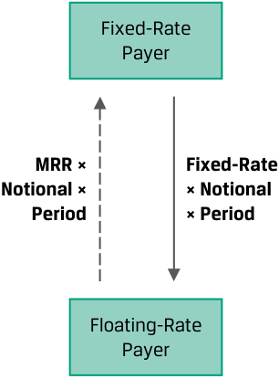
Chú thích hình ảnh: - Fixed-Rate Payer: Bên trả lãi cố định - Floating-Rate Payer: Bên trả lãi thả nổi - Dòng tiền từ Bên trả lãi thả nổi sang Bên trả lãi cố định: $\text{MRR} \times \text{Vốn danh nghĩa (Notional)} \times \text{Kỳ hạn (Period)}$ - Dòng tiền từ Bên trả lãi cố định sang Bên trả lãi thả nổi: $\text{Lãi suất cố định (Fixed-Rate)} \times \text{Vốn danh nghĩa (Notional)} \times \text{Kỳ hạn (Period)}$
In each case, the net difference between a fixed rate agreed on at inception and an MRR set in the future is used as the basis for determining cash settlement on a given notional principal over a specific time period. For example, a fixed-rate payer on a swap or FRA will realize a gain if the MRR sets at a rate higher than the agreed-on fixed rate and will receive a net payment from the floating-rate payer. However, as we saw in an earlier lesson, the FRA has a single settlement, which occurs at the beginning of an interest period, while a standard swap has periodic settlements, which occur at the end of each respective period.
Trong mỗi trường hợp, chênh lệch ròng (net difference) giữa mức lãi suất cố định được thỏa thuận tại thời điểm khởi tạo và mức lãi suất tham chiếu thị trường (MRR) được ấn định trong tương lai sẽ được sử dụng làm cơ sở để xác định khoản thanh toán bằng tiền mặt (cash settlement) tính trên một khoản vốn gốc danh nghĩa (notional principal) nhất định trong một khoảng thời gian cụ thể. Ví dụ, bên trả lãi cố định (fixed-rate payer) trong một hợp đồng hoán đổi hoặc FRA sẽ thực hiện một khoản lãi nếu MRR được ấn định ở mức cao hơn lãi suất cố định đã thỏa thuận và sẽ nhận được một khoản thanh toán ròng từ bên trả lãi thả nổi (floating-rate payer). Tuy nhiên, như chúng ta đã thấy trong bài học trước, hợp đồng FRA có một lần thanh toán duy nhất diễn ra vào đầu kỳ tính lãi (beginning of an interest period), trong khi một hợp đồng hoán đổi tiêu chuẩn có các khoản thanh toán định kỳ diễn ra vào cuối mỗi kỳ tương ứng (end of each respective period).
Other similarities between interest rate forwards and swaps include the symmetric payoff profile and the fact that no cash flow is exchanged upfront. Both interest rate forward and swap contracts involve counterparty credit exposure.
Những điểm tương đồng khác giữa hợp đồng kỳ hạn lãi suất và hợp đồng hoán đổi lãi suất bao gồm hồ sơ kết quả thanh toán đối xứng (symmetric payoff profile) và thực tế là không có dòng tiền nào được trao đổi trả trước (upfront). Cả hợp đồng kỳ hạn lãi suất và hợp đồng hoán đổi lãi suất đều hàm chứa rủi ro tín dụng đối tác (counterparty credit exposure).
Since interest rates are characterized by a term structure, different FRA fixed rates usually exist for different times to maturity. In contrast, a standard interest rate swap has a constant fixed rate over its life, which includes multiple periods. This relationship is shown visually in Exhibit 2 and numerically in Example 1, which extends an earlier spot and forward rate example.
Vì lãi suất có đặc trưng là cấu trúc kỳ hạn (term structure), các mức lãi suất cố định FRA khác nhau thường tồn tại cho các khoảng thời gian đáo hạn khác nhau. Ngược lại, một hợp đồng hoán đổi lãi suất tiêu chuẩn có mức lãi suất cố định không đổi (constant fixed rate) trong suốt vòng đời của nó, bao gồm nhiều kỳ. Mối quan hệ này được thể hiện trực quan trong Bảng 2 (Exhibit 2) và bằng số liệu trong Ví dụ 1, vốn mở rộng từ một ví dụ về lãi suất giao ngay và lãi suất kỳ hạn trước đó.
Exhibit 2: Series of FRAs vs. Standard Interest Rate Swap
Bảng 2: Chuỗi các hợp đồng FRA so với Hợp đồng Hoán đổi Lãi suất Tiêu chuẩn (Exhibit 2: Series of FRAs vs. Standard Interest Rate Swap)
Series of Forward Rate Agreements (at Different Fixed Rates)
Chuỗi các Hợp đồng Kỳ hạn Lãi suất (tại các Mức lãi suất Cố định Khác nhau) (Series of Forward Rate Agreements (at Different Fixed Rates))
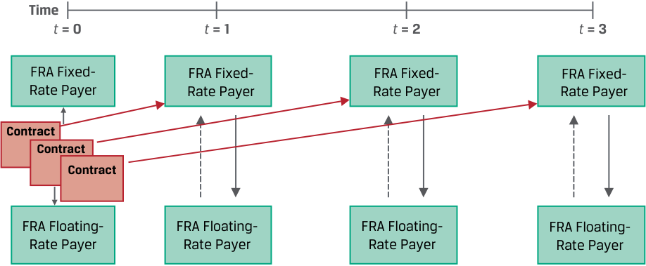
Chú thích hình ảnh: - Time ($t = 0, t = 1, t = 2, t = 3$): Thời gian - FRA Fixed-Rate Payer: Bên trả lãi cố định FRA - FRA Floating-Rate Payer: Bên trả lãi thả nổi FRA - Contract: Từng hợp đồng FRA riêng lẻ cho mỗi kỳ với các mức lãi suất cố định khác nhau.
Standard Interest Rate Swap (At A Constant Fixed Rate)
Hợp đồng Hoán đổi Lãi suất Tiêu chuẩn (Tại Một Mức lãi suất Cố định Không đổi) (Standard Interest Rate Swap (At A Constant Fixed Rate))
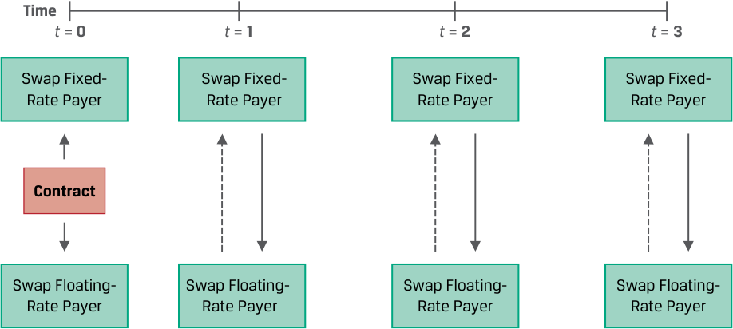
Chú thích hình ảnh: - Time ($t = 0, t = 1, t = 2, t = 3$): Thời gian - Swap Fixed-Rate Payer: Bên trả lãi cố định của hợp đồng hoán đổi - Swap Floating-Rate Payer: Bên trả lãi thả nổi của hợp đồng hoán đổi - Contract: Một hợp đồng hoán đổi duy nhất xuyên suốt các kỳ với cùng một mức lãi suất cố định không đổi.
EXAMPLE 1
VÍ DỤ 1 (EXAMPLE 1)
Swaps as a Combination of Forwards
Hợp đồng Hoán đổi dưới dạng Kết hợp của các Hợp đồng Kỳ hạn (Swaps as a Combination of Forwards)
Recall from an earlier lesson that three recently issued annual fixed-coupon government bonds had the following coupons, prices, yields-to-maturity, and zero (or spot) rates:
Hãy nhớ lại từ bài học trước rằng ba trái phiếu chính phủ trả lãi coupon cố định hàng năm vừa mới phát hành có lãi suất coupon, giá, lợi suất đáo hạn (yields-to-maturity – YTM), và lãi suất zero-coupon (hay lãi suất giao ngay – zero or spot rates) như sau:
| Years to Maturity |
Annual Coupon | PV (per 100 FV) | YTM | Zero Rates |
|---|---|---|---|---|
| 1 | 1.50% | 99.125 | 2.3960% | 2.3960% |
| 2 | 2.50% | 98.275 | 3.4068% | 3.4197% |
| 3 | 3.25% | 98.000 | 3.9703% | 4.0005% |
| Số năm đến khi đáo hạn (Years to Maturity) |
Lãi suất Coupon hàng năm (Annual Coupon) |
Giá trị hiện tại – PV (trên mỗi 100 mệnh giá FV) |
Lợi suất đáo hạn (YTM) |
Lãi suất Zero (Zero Rates) |
|---|---|---|---|---|
| 1 | 1,50% | 99,125 | 2,3960% | 2,3960% |
| 2 | 2,50% | 98,275 | 3,4068% | 3,4197% |
| 3 | 3,25% | 98,000 | 3,9703% | 4,0005% |
We solve for the implied forward rate (IFR A , B – A ), the break-even reinvestment rate for a period starting in the future (at t = A ) between short-dated ( zA ) and longer-dated ( zB ) zero rate using the following formula:
Chúng ta giải tìm lãi suất kỳ hạn hàm ý ($\text{IFR}_{A, B-A}$), tức là mức lãi suất tái đầu tư hòa vốn (break-even reinvestment rate) cho một kỳ bắt đầu trong tương lai (tại thời điểm $t = A$) giữa lãi suất zero kỳ hạn ngắn hơn ($z_A$) và lãi suất zero kỳ hạn dài hơn ($z_B$) bằng công thức sau:
(1 + zA )A × (1 + IFR A , B – A )B–A = (1 + zB )B . (1)
The respective spot rate at time t = 0 (IFR0,1) and the implied forward rates in one year (IFR1,1) and in two years (IFR2,1) are as follows:
Lãi suất giao ngay tương ứng tại thời điểm $t = 0$ ($\text{IFR}_{0,1}$) và các mức lãi suất kỳ hạn hàm ý sau một năm ($\text{IFR}_{1,1}$) và sau hai năm ($\text{IFR}_{2,1}$) lần lượt như sau:
IFR0,1 = 2.3960% = (1.023960) – 1.
IFR1,1 = 4.4536% = (1.034197)2 /(1.02396) – 1.
IFR2,1 = 5.1719% = (1.040005)3 /(1.034197)2 – 1.
One way to create a forward commitment for multiple periods with an initial value of zero would be to use a series of forward rate agreements, exchanging cash flows based on the respective implied forward rate (i.e., the FRA fixed rate) for each period. However, the fixed rate would vary for each period based on the term structure of interest rates. Instead, a standard interest rate swap is characterized by a constant fixed rate over multiple periods. These rates are shown for both alternatives below.
Một cách để tạo ra một cam kết kỳ hạn cho nhiều kỳ với giá trị ban đầu bằng không là sử dụng một chuỗi các hợp đồng kỳ hạn lãi suất (FRAs), trao đổi các dòng tiền dựa trên mức lãi suất kỳ hạn hàm ý tương ứng (tức là lãi suất cố định FRA) cho từng kỳ. Tuy nhiên, mức lãi suất cố định sẽ thay đổi (vary) cho mỗi kỳ dựa trên cấu trúc kỳ hạn của lãi suất. Thay vào đó, một hợp đồng hoán đổi lãi suất tiêu chuẩn có đặc trưng là một mức lãi suất cố định không đổi (constant) qua nhiều kỳ. Các mức lãi suất này được trình bày cho cả hai phương án dưới đây.
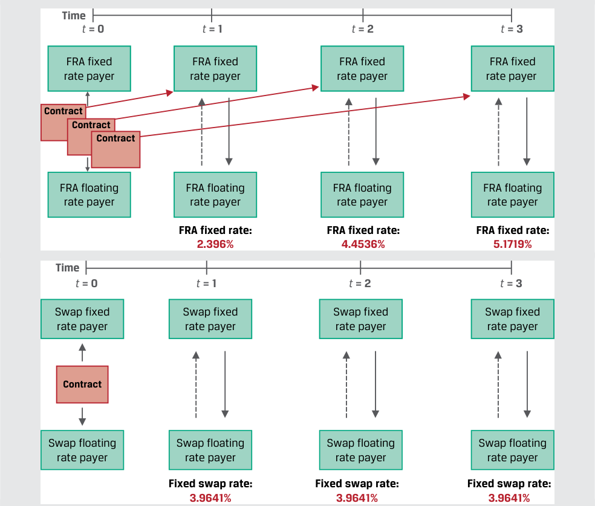
Chú thích hình ảnh: - Sơ đồ trên (Chuỗi hợp đồng FRA): Lãi suất cố định FRA (FRA fixed rate) thay đổi qua từng kỳ: Kỳ 1 ($t=1$) là $2,396\%$; Kỳ 2 ($t=2$) là $4,4536\%$; Kỳ 3 ($t=3$) là $5,1719\%$. - Sơ đồ dưới (Hợp đồng hoán đổi): Lãi suất hoán đổi cố định (Fixed swap rate) giữ nguyên không đổi qua cả ba kỳ: Kỳ 1, Kỳ 2, Kỳ 3 đều là $3,9641\%$.
The method used to solve for a swap rate was introduced in an earlier fixed-income lesson. The par rate (PMT) was shown to be the fixed rate at which a fixed-coupon bond has a price equal to par (or 100) using a sequence of zero rates ( zi for period i ) as market discount factors, as follows:
Phương pháp được sử dụng để giải tìm lãi suất hoán đổi đã được giới thiệu trong một bài học về thu nhập cố định trước đó. Lãi suất ngang giá (par rate – PMT) đã được chứng minh là mức lãi suất cố định mà tại đó một trái phiếu trả lãi coupon cố định có giá bằng mệnh giá (par, hay 100) khi sử dụng một chuỗi các lãi suất zero ($z_i$ cho kỳ $i$) làm thừa số chiết khấu thị trường (market discount factors), như sau:
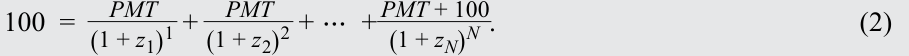
A standard interest rate swap represents an exchange of fixed payments (with no final principal payment) at a constant rate for a series of floating-rate cash flows expected to equal the respective implied forward rates at time t = 0. We must therefore modify the par bond rate calculation in Equation 2 to solve for PMT as a par swap rate.
Một hợp đồng hoán đổi lãi suất tiêu chuẩn đại diện cho việc trao đổi các khoản thanh toán cố định (không có khoản thanh toán nợ gốc cuối kỳ) tại một mức lãi suất không đổi để lấy một chuỗi các dòng tiền lãi suất thả nổi được kỳ vọng bằng với các mức lãi suất kỳ hạn hàm ý tương ứng tại thời điểm $t = 0$. Do đó, chúng ta phải điều chỉnh phép tính lãi suất trái phiếu ngang giá trong Phương trình 2 để giải tìm PMT dưới dạng lãi suất hoán đổi ngang giá (par swap rate).
Exhibit 3: Par Swap Rate, Spot, and Forward Curve
Bảng 3: Lãi suất Hoán đổi Ngang giá, Đường cong Lãi suất Giao ngay và Đường cong Lãi suất Kỳ hạn (Exhibit 3: Par Swap Rate, Spot, and Forward Curve)
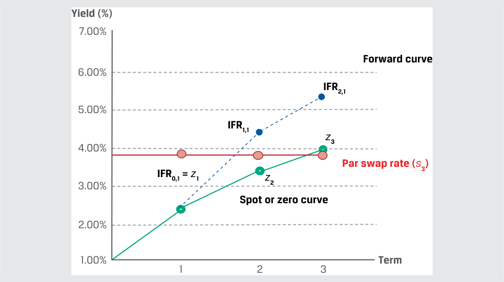
Chú thích hình ảnh: - Trục tung: Lợi suất (Yield – %) từ $1,00\%$ đến $7,00\%$; Trục hoành: Kỳ hạn (Term) 1, 2, 3. - Forward curve: Đường cong lãi suất kỳ hạn ($\text{IFR}_{0,1} = z_1$, $\text{IFR}_{1,1}$, $\text{IFR}_{2,1}$). - Spot or zero curve: Đường cong lãi suất giao ngay hay lãi suất zero ($z_1, z_2, z_3$). - Par swap rate ($s_3$): Lãi suất hoán đổi ngang giá kỳ hạn 3 năm (đường nằm ngang ở mức $\approx 3,9641\%$).
The par swap rate is the fixed rate that equates the present value of all future expected floating cash flows to the present value of fixed cash flows.
Lãi suất hoán đổi ngang giá (par swap rate) là mức lãi suất cố định làm cân bằng giá trị hiện tại của tất cả các dòng tiền thả nổi dự kiến trong tương lai với giá trị hiện tại của các dòng tiền cố định.
Σ PV(Floating payments) = Σ PV(Fixed payments), or
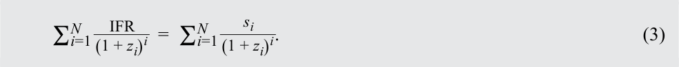
In our three-period example, we use the implied forward rates, IFR, to solve for s 3, or the three-year swap rate:
Trong ví dụ ba kỳ của chúng ta, chúng ta sử dụng các mức lãi suất kỳ hạn hàm ý, $\text{IFR}$, để giải tìm $s_3$, hay lãi suất hoán đổi kỳ hạn 3 năm:
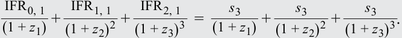
Substitute each of these building blocks into Equation 3 to solve for s 3:
Thay thế từng cấu phần nền tảng này vào Phương trình 3 để giải tìm $s_3$:
_ 0.111017 = 1.023962.396%+ ( 1.0341974.4537%)2+ ( 1.0400055.1719%)3 = 1.02396 _s 3+ ( 1.034197 _s 3)2+ ( 1.040005 _s 3)3 0.111017 = 2.800545 × s 3. s 3 = 3.9641%.
Lãi suất hoán đổi kỳ hạn 3 năm ở mức 3,9641% có thể được hiểu là mức lãi suất hòa vốn đa kỳ (multiperiod breakeven rate) mà tại đó một nhà đầu tư sẽ bàng quan (indifferent) giữa việc:
The three-year swap rate of 3.9641% may be interpreted as a multiperiod breakeven rate at which an investor would be indifferent to
-
paying the fixed swap rate and receiving the respective forward rates or
-
receiving the fixed swap rate and paying the respective forward rates.
-
trả lãi suất hoán đổi cố định và nhận các mức lãi suất kỳ hạn tương ứng, hoặc
-
nhận lãi suất hoán đổi cố định và trả các mức lãi suất kỳ hạn tương ứng.
For this reason, we may think of the fixed swap rate as an internal rate of return on the implied forward rates through the maturity of the swap as of t = 0. Exhibit 3 also demonstrates that while the combined value of the equivalent forward contracts is zero at time t = 0, some individual forward exchanges may have a positive present value and some will have a negative present value. For example, a fixed-rate receiver (floating-rate payer) on the swap in Example 1 would expect the following cash flow in one year’s time:
Vì lý do này, chúng ta có thể coi lãi suất hoán đổi cố định như một tỷ suất hoàn vốn nội bộ (internal rate of return – IRR) đối với các mức lãi suất kỳ hạn hàm ý cho đến khi đáo hạn hợp đồng hoán đổi tính tại thời điểm $t = 0$. Bảng 3 cũng chứng minh rằng mặc dù tổng giá trị kết hợp của các hợp đồng kỳ hạn tương đương bằng không tại thời điểm $t = 0$, một số giao dịch trao đổi kỳ hạn riêng lẻ có thể có giá trị hiện tại dương và một số sẽ có giá trị hiện tại âm. Ví dụ, bên nhận lãi cố định (bên trả lãi thả nổi) trong hợp đồng hoán đổi ở Ví dụ 1 sẽ kỳ vọng dòng tiền sau đây sau thời gian một năm:
-
Receive the fixed swap rate ( s 3) of 3.9641%.
-
Pay the initial floating rate (IFR0,1) of 2.396%.
-
Nhận lãi suất hoán đổi cố định ($s_3$) là 3,9641%.
-
Trả lãi suất thả nổi ban đầu ($\text{IFR}_{0,1}$) là 2,396%.
- Receive a net payment of 1.5681% (= 3.9641% – 2.396%) on the notional for the period.
- Nhận một khoản thanh toán ròng là 1,5681% ($= 3,9641\% - 2,396\%$) tính trên vốn danh nghĩa cho kỳ đó.
Derivative end users, such as issuers and investors, tend to use swaps more often than individual interest rate forward contracts for a number of reasons. For example, the ability to match cash flows of underlying assets or liabilities allows issuers to transform their exposure profile as in Example 2.
Những người sử dụng cuối cùng (end users) đối với công cụ phái sinh, chẳng hạn như các tổ chức phát hành và các nhà đầu tư, có xu hướng sử dụng hợp đồng hoán đổi thường xuyên hơn so với các hợp đồng kỳ hạn lãi suất riêng lẻ vì một số lý do. Ví dụ, khả năng khớp các dòng tiền của tài sản hoặc nợ phải trả cơ sở cho phép các tổ chức phát hành chuyển đổi hồ sơ phơi nhiễm rủi ro của họ như trong Ví dụ 2.
EXAMPLE 2
VÍ DỤ 2 (EXAMPLE 2)
Esterr Inc. Swap to Fixed
Hợp đồng Hoán đổi sang Lãi suất Cố định của Esterr Inc. (Esterr Inc. Swap to Fixed)
Recall from an earlier lesson that Esterr Inc. has a CAD250 million floating-rate term loan at three-month Canadian MRR plus 150 basis points with three and a half years to maturity paid quarterly. Esterr enters into a CAD250 million interest rate swap contract to pay a fixed quarterly swap rate of 2.05% and receive a three-month floating MRR on a notional principal of CAD250 million based on payment dates that match the term loan. The combined loan and swap exposure may be shown as follows:
Hãy nhớ lại từ một bài học trước rằng Esterr Inc. có một khoản vay có kỳ hạn lãi suất thả nổi (floating-rate term loan) trị giá 250 triệu CAD với lãi suất bằng MRR đồng Canada kỳ hạn 3 tháng cộng 150 điểm cơ bản (basis points – bps), còn 3,5 năm nữa là đáo hạn và trả lãi hàng quý. Esterr tham gia vào một hợp đồng hoán đổi lãi suất trị giá 250 triệu CAD để trả lãi suất hoán đổi cố định hàng quý là 2,05% và nhận lãi suất MRR thả nổi kỳ hạn 3 tháng trên vốn gốc danh nghĩa 250 triệu CAD dựa trên các ngày thanh toán khớp với khoản vay có kỳ hạn. Mức phơi nhiễm rủi ro kết hợp của khoản vay và hợp đồng hoán đổi có thể được thể hiện như sau:
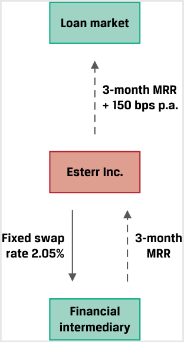
Chú thích hình ảnh: - Loan market: Thị trường cho vay (Esterr Inc. trả lãi suất $\text{MRR 3 tháng} + 150\text{ bps/năm}$). - Esterr Inc.: Tổ chức phát hành / Bên đi vay. - Financial intermediary: Định chế tài chính trung gian (Esterr Inc. trả lãi suất hoán đổi cố định $2,05\%$ và nhận $\text{MRR 3 tháng}$).
Under the swap arrangement, Esterr can fix its interest expense for the term loan and avoids the administrative burden of multiple forward contracts at different forward rates. Consider the following cash flow scenarios on the interest rate swap and term loan (assuming each interest period is 0.25 year):
Theo thỏa thuận hoán đổi này, Esterr có thể cố định chi phí lãi vay (interest expense) cho khoản vay có kỳ hạn của mình và tránh được gánh nặng hành chính của việc quản lý nhiều hợp đồng kỳ hạn tại các mức lãi suất kỳ hạn khác nhau. Hãy xem xét các kịch bản dòng tiền sau đây đối với hợp đồng hoán đổi lãi suất và khoản vay có kỳ hạn (giả sử mỗi kỳ tính lãi là 0,25 năm):
Scenario 1:
Kịch bản 1 (Scenario 1):
CAD MRR sets at 3.75%. As the fixed-rate payer, Esterr
Lãi suất MRR đồng CAD được ấn định ở mức 3,75%. Với tư cách là bên trả lãi cố định (fixed-rate payer), Esterr:
-
pays the fixed swap rate of 2.05% and receives CAD MRR of 3.75%,
-
receives a net swap payment of 1.70% for the quarter, and
-
makes a term loan payment of 5.25% (= 3.75% + 1.50%).
-
trả lãi suất hoán đổi cố định 2,05% và nhận MRR đồng CAD ở mức 3,75%,
-
nhận một khoản thanh toán hoán đổi ròng là 1,70% cho quý đó, và
-
thực hiện khoản thanh toán lãi vay có kỳ hạn là 5,25% ($= 3,75\% + 1,50\%$).
Esterr’s interest expense is 3.55% (= 5.25% paid – 1.70% received).
Chi phí lãi vay của Esterr là 3,55% ($= 5,25\%\text{ trả đi} - 1,70\%\text{ nhận về}$).
Scenario 2:
Kịch bản 2 (Scenario 2):
CAD MRR sets at 1.25%. As the fixed-rate payer, Esterr
Lãi suất MRR đồng CAD được ấn định ở mức 1,25%. Với tư cách là bên trả lãi cố định, Esterr:
-
pays the fixed swap rate of 2.05% and receives CAD MRR of 1.25%,
-
pays a net swap payment of 0.80% for the quarter, and
-
trả lãi suất hoán đổi cố định 2,05% và nhận MRR đồng CAD ở mức 1,25%,
-
trả một khoản thanh toán hoán đổi ròng là 0,80% cho quý đó, và
■ makes a term loan payment of 2.75% (= 1.25% + 1.50%).
- thực hiện khoản thanh toán lãi vay có kỳ hạn là 2,75% ($= 1,25\% + 1,50\%$).
Esterr’s interest expense is 3.55% (= 2.75% paid + 0.80% paid). Regardless of where CAD MRR sets each period, Esterr’s interest expense for each quarterly interest period is approximately CAD2,218,750 (= 3.55%, [equal to the 2.05% swap rate + 1.50% loan spread] × CAD250 million × 0.25 year).
Chi phí lãi vay của Esterr là 3,55% ($= 2,75\%\text{ trả đi} + 0,80\%\text{ trả đi}$). Bất kể lãi suất MRR đồng CAD được ấn định ở mức nào trong mỗi kỳ, chi phí lãi vay của Esterr cho mỗi kỳ tính lãi hàng quý đều xấp xỉ 2.218.750 CAD ($= 3,55\%$ [bằng lãi suất hoán đổi 2,05% + mức chênh lệch khoản vay 1,50%] $\times 250\text{ triệu CAD} \times 0,25\text{ năm}$).
As a fixed-income instrument with periodic fixed cash flows through maturity, an interest rate swap should be expected to have risk and return features similar to those of a fixed-coupon bond of a similar maturity. This feature makes interest rate swaps a more attractive alternative to forward rate agreements for investors in managing fixed-income exposures as well. Consider the following comparison of a cash bond position to paying or receiving a fixed swap rate:
Là một công cụ thu nhập cố định có các dòng tiền cố định định kỳ cho đến khi đáo hạn, một hợp đồng hoán đổi lãi suất được kỳ vọng sẽ có các đặc điểm rủi ro và tỷ suất sinh lợi tương tự như một trái phiếu trả lãi coupon cố định có kỳ hạn tương đương. Đặc điểm này làm cho các hợp đồng hoán đổi lãi suất trở thành một lựa chọn thay thế hấp dẫn hơn so với các hợp đồng kỳ hạn lãi suất (FRAs) đối với các nhà đầu tư trong việc quản lý mức phơi nhiễm rủi ro thu nhập cố định. Hãy xem xét bảng so sánh sau đây giữa một vị thế trái phiếu tiền mặt (cash bond position) với việc trả hoặc nhận lãi suất hoán đổi cố định:
Exhibit 4: Using Swaps to Manage Fixed-Income Exposure
Bảng 4: Sử dụng Hợp đồng Hoán đổi để Quản lý Phơi nhiễm Rủi ro Thu nhập Cố định (Exhibit 4: Using Swaps to Manage Fixed-Income Exposure)
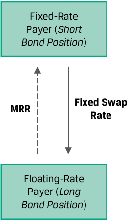
Chú thích hình ảnh: - Fixed-Rate Payer (Short Bond Position): Bên trả lãi cố định (tương đương Vị thế bán trái phiếu cố định). - Floating-Rate Payer (Long Bond Position): Bên trả lãi thả nổi / nhận lãi cố định (tương đương Vị thế mua trái phiếu cố định). - Dòng tiền trao đổi gồm MRR (Lãi suất tham chiếu thị trường) và Fixed Swap Rate (Lãi suất hoán đổi cố định).
| Instrument | Position |
Higher interest rates |
Lower interest rates |
|---|---|---|---|
| Cash bond | Long fixed bond Short floating-rate note |
Loss | Gain |
| Interest rate swap |
l Receive fixed Pay floating |
Loss | Gain |
| Cash bond | l Short fixed bond Long floating-rate note |
Gain | Loss |
| Interest rate swap |
l Pay fixed Receive floating |
Gain | Loss |
| Công cụ (Instrument) | Vị thế (Position) | Lãi suất cao hơn (Higher interest rates) | Lãi suất thấp hơn (Lower interest rates) |
|---|---|---|---|
| Trái phiếu tiền mặt (Cash bond) | - Mua trái phiếu cố định (Long fixed bond) - Bán trái phiếu lãi suất thả nổi (Short floating-rate note) |
Lỗ (Loss) | Lãi (Gain) |
| Hợp đồng hoán đổi lãi suất (Interest rate swap) | - Nhận cố định (Receive fixed) - Trả thả nổi (Pay floating) |
Lỗ (Loss) | Lãi (Gain) |
| Trái phiếu tiền mặt (Cash bond) | - Bán trái phiếu cố định (Short fixed bond) - Mua trái phiếu lãi suất thả nổi (Long floating-rate note) |
Lãi (Gain) | Lỗ (Loss) |
| Hợp đồng hoán đổi lãi suất (Interest rate swap) | - Trả cố định (Pay fixed) - Nhận thả nổi (Receive floating) |
Lãi (Gain) | Lỗ (Loss) |
While the next lesson will explore the value and price of interest rate swaps in greater detail, Exhibit 4 demonstrates the similarity between a long (short) bond position and a receive (pay) fixed interest rate swap. Given their greater liquidity than and similar benchmark exposure profile to individual bond positions, active fixed-income portfolio managers often use swaps rather than underlying securities to adjust their interest rate exposure. For example, if interest rates are expected to fall, a portfolio manager may choose to receive fixed on a swap rather than purchase underlying bonds to realize a gain in a lower rate environment.
Mặc dù bài học tiếp theo sẽ khám phá giá trị và mức giá của hợp đồng hoán đổi lãi suất một cách chi tiết hơn, Bảng 4 chứng minh sự tương đồng giữa vị thế mua (bán) trái phiếu và hợp đồng hoán đổi lãi suất nhận (trả) lãi cố định. Nhờ tính thanh khoản cao hơn và hồ sơ phơi nhiễm rủi ro chuẩn (benchmark exposure profile) tương tự như các vị thế trái phiếu riêng lẻ, các nhà quản lý danh mục đầu tư thu nhập cố định chủ động (active fixed-income portfolio managers) thường sử dụng các hợp đồng hoán đổi thay vì các chứng khoán cơ sở để điều chỉnh mức phơi nhiễm rủi ro lãi suất của họ. Ví dụ, nếu lãi suất được dự báo sẽ giảm, một nhà quản lý danh mục đầu tư có thể chọn nhận lãi cố định trên một hợp đồng hoán đổi thay vì mua các trái phiếu cơ sở để hiện thực hóa khoản lợi nhuận trong môi trường lãi suất thấp hơn.
As mentioned earlier, FRAs are primarily used by financial intermediaries to manage their rate-sensitive positions on a period-by-period basis. Issuers and investors typically opt for the greater efficiency of interest rate swaps to manage their interest rate exposures. As we will see in later lessons, the greater liquidity of interest rate swaps has also led to their use both as a bond pricing benchmark and an underlying variable for other derivative instruments.
Như đã đề cập trước đó, hợp đồng FRA chủ yếu được sử dụng bởi các định chế tài chính trung gian để quản lý các vị thế nhạy cảm với lãi suất của họ theo từng kỳ một (period-by-period basis). Các tổ chức phát hành và các nhà đầu tư thường lựa chọn hiệu quả cao hơn của các hợp đồng hoán đổi lãi suất để quản lý mức phơi nhiễm rủi ro lãi suất của mình. Như chúng ta sẽ thấy trong các bài học sau, tính thanh khoản cao hơn của các hợp đồng hoán đổi lãi suất cũng đã dẫn đến việc chúng được sử dụng vừa làm chuẩn mực định giá trái phiếu (bond pricing benchmark) vừa làm biến số cơ sở (underlying variable) cho các công cụ phái sinh khác.
QUESTION SET
BỘ CÂU HỎI (QUESTION SET)
Interest Rate Swaps vs. Forward Contracts
Hợp đồng Hoán đổi Lãi suất so với Hợp đồng Kỳ hạn (Interest Rate Swaps vs. Forward Contracts)
- Determine the correct answers to fill in the blanks: A fixed-rate payer on a swap or FRA will realize a(n) __ if the MRR sets at a rate higher than the agreed-on fixed rate and will _ a net payment ___ the floating-rate payer.
- Xác định các câu trả lời đúng để điền vào chỗ trống: Bên trả lãi cố định (fixed-rate payer) trong một hợp đồng hoán đổi hoặc FRA sẽ thực hiện một khoản __ nếu MRR được ấn định ở mức cao hơn lãi suất cố định đã thỏa thuận và sẽ _ một khoản thanh toán ròng ___ bên trả lãi thả nổi (floating-rate payer).
Solution:
Lời giải:
A fixed-rate payer on a swap or FRA will realize a gain if the MRR sets at a rate higher than the agreed-on fixed rate and will receive a net payment from the floating-rate payer.
Bên trả lãi cố định trong một hợp đồng hoán đổi hoặc FRA sẽ thực hiện một khoản lãi (gain) nếu MRR được ấn định ở mức cao hơn lãi suất cố định đã thỏa thuận và sẽ nhận (receive) một khoản thanh toán ròng từ (from) bên trả lãi thả nổi.
-
Identify which of the following characteristics matches which forward commitment contract.
-
The price of this contract is the implied forward A. Interest rate swap rate, or the breakeven reinvestment rate, for a period starting in the future.
-
Involves counterparty credit risk
B. Forward rate agreement
- Xác định đặc điểm nào sau đây khớp với loại hợp đồng cam kết kỳ hạn nào.
- Has a constant fixed rate for which the presC. Both an interest rate ent value of future fixed versus floating cash flow swap and an interest rate exchanges is equal to zero forward contract
| Đặc điểm | Hợp đồng cam kết kỳ hạn |
|---|---|
| 1. Giá của hợp đồng này là lãi suất kỳ hạn hàm ý (implied forward rate), hay lãi suất tái đầu tư hòa vốn (breakeven reinvestment rate), cho một kỳ bắt đầu trong tương lai. | A. Hợp đồng hoán đổi lãi suất (Interest rate swap) |
| 2. Hàm chứa rủi ro tín dụng đối tác (counterparty credit risk) | B. Hợp đồng kỳ hạn lãi suất (Forward rate agreement) |
| 3. Có một mức lãi suất cố định không đổi mà tại đó giá trị hiện tại của các giao dịch trao đổi dòng tiền cố định so với thả nổi trong tương lai bằng không | C. Cả hợp đồng hoán đổi lãi suất và hợp đồng kỳ hạn lãi suất |
Solution:
Lời giải:
1. B is correct. The breakeven reinvestment rate, or implied forward rate, is the no-arbitrage FRA fixed rate.
1. B là đáp án đúng. Lãi suất tái đầu tư hòa vốn, hay lãi suất kỳ hạn hàm ý, là mức lãi suất cố định FRA không có kinh doanh chênh lệch giá (no-arbitrage FRA fixed rate).
2. C is correct. Both an interest rate swap and a forward rate agreement involve counterparty credit risk.
2. C là đáp án đúng. Cả hợp đồng hoán đổi lãi suất và hợp đồng kỳ hạn lãi suất đều hàm chứa rủi ro tín dụng đối tác.
3. A is correct. An interest rate swap has a constant fixed rate for which the present value of fixed versus floating cash flow exchanges equals zero.
3. A là đáp án đúng. Hợp đồng hoán đổi lãi suất có một mức lãi suất cố định không đổi mà tại đó giá trị hiện tại của các giao dịch trao đổi dòng tiền cố định so với thả nổi bằng không.
Volume 7: Derivatives
Learning Module 7 Pricing and Valuation of Interest Rates and Other Swaps
Part 2/2: Swap Values and Prices (PDF Pages 167–178)
Tập 7: Công cụ Phái sinh (Derivatives)
Học phần 7: Định giá và Xác định giá trị của Hợp đồng Hoán đổi Lãi suất và Các Hợp đồng Hoán đổi Khác (Pricing and Valuation of Interest Rates and Other Swaps)
Phần 2/2: Giá trị và Mức giá của Hợp đồng Hoán đổi (Trang PDF 167–178)
-
Identify which of the following benefits of using swaps over forwards are most applicable to which derivative end users.
-
Swaps allow these end users to match the periA. Both issuers and odic cash flows of a specific balance sheet liability to investors transform their interest rate exposure profile. 2. Swaps enable these end users to actively adjust B. Issuers their interest rate exposure profile without buying or selling underlying securities 3. Swaps involving a series of cash flows enable C. Investors these end users to avoid the administrative burden of entering into and managing multiple forward contracts. Solution: 1. B is correct. Swaps allow issuers to match the periodic cash flows of a specific balance sheet liability to transform their interest rate exposure profile, as shown in Example 2.
- Xác định lợi ích nào sau đây của việc sử dụng hợp đồng hoán đổi thay vì hợp đồng kỳ hạn được áp dụng phù hợp nhất cho đối tượng người sử dụng cuối cùng (derivative end users) nào.
| Lợi ích của hợp đồng hoán đổi | Người sử dụng cuối cùng |
|---|---|
| 1. Hợp đồng hoán đổi cho phép những người sử dụng cuối cùng này khớp các dòng tiền định kỳ của một khoản nợ phải trả cụ thể trên bảng cân đối kế toán để chuyển đổi hồ sơ phơi nhiễm rủi ro lãi suất của họ. | A. Cả tổ chức phát hành (issuers) và nhà đầu tư (investors) |
| 2. Hợp đồng hoán đổi cho phép những người sử dụng cuối cùng này chủ động điều chỉnh hồ sơ phơi nhiễm rủi ro lãi suất của họ mà không cần mua hoặc bán các chứng khoán cơ sở. | B. Tổ chức phát hành (Issuers) |
| 3. Hợp đồng hoán đổi liên quan đến một chuỗi các dòng tiền giúp những người sử dụng cuối cùng này tránh được gánh nặng hành chính của việc tham gia và quản lý nhiều hợp đồng kỳ hạn. | C. Nhà đầu tư (Investors) |
2. C is correct. Swaps enable investors to actively adjust their interest rate exposure profile without buying or selling underlying securities.
Lời giải:
1. B là đáp án đúng. Hợp đồng hoán đổi cho phép các tổ chức phát hành khớp các dòng tiền định kỳ của một khoản nợ phải trả cụ thể trên bảng cân đối kế toán để chuyển đổi hồ sơ phơi nhiễm rủi ro lãi suất của họ, như đã trình bày trong Ví dụ 2.
3. A is correct. Both issuers and investors benefit from a reduced administrative burden of entering one interest rate swap for a series of cash flows rather than multiple individual forward contracts.
2. C là đáp án đúng. Hợp đồng hoán đổi cho phép các nhà đầu tư chủ động điều chỉnh hồ sơ phơi nhiễm rủi ro lãi suất của họ mà không cần mua hoặc bán các chứng khoán cơ sở.
3. A là đáp án đúng. Cả các tổ chức phát hành và các nhà đầu tư đều hưởng lợi từ việc giảm bớt gánh nặng hành chính khi chỉ tham gia một hợp đồng hoán đổi lãi suất cho một chuỗi các dòng tiền thay vì nhiều hợp đồng kỳ hạn riêng lẻ.
-
Identify the following statement as true or false, and justify your response: The market reference rate (MRR) is the internal rate of return on the implied forward rates over the life of an interest rate swap. Solution: False. The fixed swap rate is the internal rate of return on the implied forward rates over the life of an interest rate swap.
-
Explain how an active fixed-income portfolio manager might use an interest rate swap rather than underlying bonds to realize a gain in a lower–interest rate environment, and justify your response. Solution: A manager may choose to receive fixed, pay floating on an interest rate swap, with the fixed cash flow stream being similar to owning a fixed-coupon bond. If interest rates are expected to fall, the manager will realize an MTM gain in a lower-rate environment.
- Xác định phát biểu sau đây là đúng hay sai, và giải thích câu trả lời của bạn: Lãi suất tham chiếu thị trường (market reference rate – MRR) là tỷ suất hoàn vốn nội bộ (internal rate of return – IRR) đối với các mức lãi suất kỳ hạn hàm ý trong suốt vòng đời của một hợp đồng hoán đổi lãi suất.
Lời giải:
SWAP VALUES AND PRICES
Sai. Lãi suất hoán đổi cố định (fixed swap rate) mới là tỷ suất hoàn vốn nội bộ đối với các mức lãi suất kỳ hạn hàm ý trong suốt vòng đời của một hợp đồng hoán đổi lãi suất.
- Giải thích cách thức một nhà quản lý danh mục đầu tư thu nhập cố định chủ động (active fixed-income portfolio manager) có thể sử dụng hợp đồng hoán đổi lãi suất thay vì các trái phiếu cơ sở để hiện thực hóa khoản lãi trong môi trường lãi suất thấp hơn, và giải thích lý do cho câu trả lời của bạn.
3
Lời giải:
Một nhà quản lý có thể chọn vị thế nhận lãi cố định, trả lãi thả nổi (receive fixed, pay floating) trong một hợp đồng hoán đổi lãi suất, với luồng dòng tiền cố định tương tự như việc sở hữu một trái phiếu trả lãi coupon cố định. Nếu lãi suất được dự báo sẽ giảm, nhà quản lý sẽ thực hiện được một khoản lãi định giá theo thị trường (MTM gain) trong môi trường lãi suất thấp hơn.
contrast the value and price of swaps
GIÁ TRỊ VÀ MỨC GIÁ CỦA HỢP ĐỒNG HOÁN ĐỔI (SWAP VALUES AND PRICES)
3
In the prior lesson, we showed a swap price (or par swap rate) to be a periodic fixed rate that equates the present value of all future expected floating cash flows to the present value of fixed cash flows. The swap rate ( sN for N periods) is equivalent to a
đối chiếu giá trị (value) và mức giá (price) của các hợp đồng hoán đổi
Trong bài học trước, chúng ta đã chỉ ra rằng mức giá của một hợp đồng hoán đổi (swap price, hay lãi suất hoán đổi ngang giá – par swap rate) là một mức lãi suất cố định định kỳ làm cân bằng giá trị hiện tại của tất cả các dòng tiền thả nổi dự kiến trong tương lai với giá trị hiện tại của các dòng tiền cố định. Lãi suất hoán đổi ($s_N$ cho $N$ kỳ) tương đương với một
forward rate, F 0( T ), that satisfies the no-arbitrage condition. Similar to other forwards, the initial contract value (ignoring transaction and counterparty credit costs) is zero ( V 0( T ) = 0).
mức lãi suất kỳ hạn, $F_0(T)$, thỏa mãn điều kiện không có kinh doanh chênh lệch giá (no-arbitrage condition). Tương tự như các hợp đồng kỳ hạn khác, giá trị hợp đồng ban đầu (bỏ qua chi phí giao dịch và chi phí tín dụng đối tác) bằng không ($V_0(T) = 0$).
In contrast to other forward commitments, which involve a single settlement at maturity, a swap contract involves a series of periodic settlements with a final settlement at contract maturity. Recall from an earlier lesson that the value of a forward contract at maturity from the long forward (or forward buyer’s) perspective is VT ( T ) = ST – F 0( T ), where ST is the spot price at maturity and F 0( T ) is the forward price. For a swap with periodic exchanges, the current MRR is the “spot” price and the fixed swap rate, sN , is the forward price. Restating this result for the fixed-rate payer on a swap, the periodic settlement value is
Trái ngược với các cam kết kỳ hạn khác vốn chỉ liên quan đến một lần thanh toán duy nhất (single settlement) khi đáo hạn, một hợp đồng hoán đổi liên quan đến một chuỗi các khoản thanh toán định kỳ (series of periodic settlements) cùng với một lần thanh toán cuối cùng khi hợp đồng đáo hạn. Hãy nhớ lại từ bài học trước rằng giá trị của một hợp đồng kỳ hạn khi đáo hạn dưới góc độ của bên mua kỳ hạn (long forward) là $V_T(T) = S_T - F_0(T)$, trong đó $S_T$ là giá giao ngay khi đáo hạn và $F_0(T)$ là giá kỳ hạn. Đối với một hợp đồng hoán đổi có các lần trao đổi định kỳ, lãi suất MRR hiện hành đóng vai trò là mức giá “giao ngay” (“spot” price) và lãi suất hoán đổi cố định, $s_N$, là mức giá kỳ hạn (forward price). Phát biểu lại kết quả này cho bên trả lãi cố định (fixed-rate payer) trong một hợp đồng hoán đổi, giá trị thanh toán định kỳ (periodic settlement value) là:
Periodic settlement value = (MRR – sN ) × Notional amount × Period. ~~(4)~~
The value of a swap on any settlement date equals the current settlement value in Equation 4 plus the present value of all remaining future swap settlements. Although swap market conventions vary, for purposes of this lesson we will assume the MRR sets at the beginning of each interest period, with the same periodicity and day count convention as the swap rate. The fixed versus floating difference is exchanged at the end of each period.
Giá trị của một hợp đồng hoán đổi vào bất kỳ ngày thanh toán nào bằng giá trị thanh toán hiện tại trong Phương trình 4 cộng với giá trị hiện tại của tất cả các khoản thanh toán hoán đổi trong tương lai còn lại. Mặc dù thông lệ thị trường hoán đổi có sự khác nhau, cho mục đích của bài học này, chúng ta sẽ giả định rằng MRR được ấn định vào đầu mỗi kỳ tính lãi, với cùng tần suất kỳ hạn (periodicity) và quy ước đếm ngày (day count convention) như lãi suất hoán đổi. Khoản chênh lệch giữa lãi cố định và lãi thả nổi được trao đổi vào cuối mỗi kỳ.
EXAMPLE 3
VÍ DỤ 3 (EXAMPLE 3)
Esterr Inc. Swap Value and Price
Giá trị và Mức giá Hợp đồng Hoán đổi của Esterr Inc. (Esterr Inc. Swap Value and Price)
Esterr entered a 3.5-year CAD250 million interest rate swap contract under which it pays a fixed quarterly swap rate of 2.05% and receives three-month CAD MRR. The fixed swap price of 2.05% paid by Esterr remains constant over the life of the contract. While the first three-month CAD MRR is known at t = 0, the remaining 13 MRR settings are unknown but are expected to equal the respective implied forward rates (IFRs) for each period through maturity. A prior lesson showed how IFRs are derived from zero rates, which were then used to solve for the fixed swap rate by setting the present value of fixed payments equal to the present value of floating payments.
Esterr đã tham gia vào một hợp đồng hoán đổi lãi suất kỳ hạn 3,5 năm trị giá 250 triệu CAD, theo đó công ty trả lãi suất hoán đổi cố định hàng quý là 2,05% và nhận lãi suất MRR đồng CAD kỳ hạn 3 tháng. Mức giá hoán đổi cố định (fixed swap price) 2,05% do Esterr trả giữ nguyên không đổi trong suốt vòng đời của hợp đồng. Trong khi lãi suất MRR đồng CAD kỳ hạn 3 tháng đầu tiên đã được biết tại thời điểm $t = 0$, 13 lần ấn định MRR còn lại vẫn chưa được biết nhưng được kỳ vọng sẽ bằng với các mức lãi suất kỳ hạn hàm ý (implied forward rates – IFRs) tương ứng cho mỗi kỳ cho đến khi đáo hạn. Một bài học trước đã chỉ ra cách thức các mức IFR được suy ra từ lãi suất zero, sau đó được sử dụng để giải tìm lãi suất hoán đổi cố định bằng cách đặt giá trị hiện tại của các khoản thanh toán cố định bằng với giá trị hiện tại của các khoản thanh toán thả nổi.
The value of Esterr’s swap contract will change as time passes and interest rates change. We first consider the passage of time with no change to expected interest rates. That is, the MRR sets each period based on the implied forward rates at trade inception. Assume the following implied forward rates apply to Esterr’s swap at t = 0:
Giá trị (value) hợp đồng hoán đổi của Esterr sẽ thay đổi khi thời gian trôi qua và lãi suất thay đổi. Trước tiên, chúng ta xem xét sự trôi qua của thời gian mà không có sự thay đổi nào đối với lãi suất kỳ vọng. Nghĩa là, MRR được ấn định trong mỗi kỳ dựa đúng theo các mức lãi suất kỳ hạn hàm ý tại thời điểm khởi tạo giao dịch. Giả sử các mức lãi suất kỳ hạn hàm ý sau đây được áp dụng cho hợp đồng hoán đổi của Esterr tại thời điểm $t = 0$:
| Period | IFR | Rate |
|---|---|---|
| 1 | IFR0,3_m_ | 0.50% |
| 2 | IFR3_m_,3_m_ | 0.74% |
| 3 | IFR6_m_,3_m_ | 0.98% |
| 4 | IFR9_m_,3_m_ | 1.22% |
| 5 | IFR12_m_,3_m_ | 1.46% |
| 6 | IFR15_m_,3_m_ | 1.70% |
| 7 | IFR18_m_,3_m_ | 1.94% |
| 8 | IFR21_m_,3_m_ | 2.18% |
| 9 | IFR24_m_,3_m_ | 2.43% |
| 10 | IFR27_m_,3_m_ | 2.67% |
| 11 | IFR30_m_,3_m_ | 2.91% |
| 12 | IFR33_m_,3_m_ | 3.15% |
| Kỳ (Period) | Lãi suất kỳ hạn hàm ý (IFR) | Mức lãi suất (Rate) |
|---|---|---|
| 1 | $\text{IFR}_{0,3m}$ | 0,50% |
| 2 | $\text{IFR}_{3m,3m}$ | 0,74% |
| 3 | $\text{IFR}_{6m,3m}$ | 0,98% |
| 4 | $\text{IFR}_{9m,3m}$ | 1,22% |
| 5 | $\text{IFR}_{12m,3m}$ | 1,46% |
| 6 | $\text{IFR}_{15m,3m}$ | 1,70% |
| 7 | $\text{IFR}_{18m,3m}$ | 1,94% |
| 8 | $\text{IFR}_{21m,3m}$ | 2,18% |
| 9 | $\text{IFR}_{24m,3m}$ | 2,43% |
| 10 | $\text{IFR}_{27m,3m}$ | 2,67% |
| 11 | $\text{IFR}_{30m,3m}$ | 2,91% |
| 12 | $\text{IFR}_{33m,3m}$ | 3,15% |
| Period | IFR | Rate |
|---|---|---|
| 13 | IFR36_m_,3_m_ | 3.39% |
| 14 | IFR39_m_,3_m_ | 3.78% |
| Kỳ (Period) | Lãi suất kỳ hạn hàm ý (IFR) | Mức lãi suất (Rate) |
|---|---|---|
| 13 | $\text{IFR}_{36m,3m}$ | 3,39% |
| 14 | $\text{IFR}_{39m,3m}$ | 3,78% |
Based on these forward rates, Esterr expects to make a net swap payment each quarter through the seventh period—since (MRR – sN ) = (1.94% – 2.05%) < 0—and receive a net quarterly swap payment starting in the eighth period, where (MRR – sN ) = (2.18% – 2.05%) > 0. Using Equation 1, consider the periodic settlement values for the first two periods from Esterr’s perspective as the fixed-rate payer:
Dựa trên các mức lãi suất kỳ hạn này, Esterr kỳ vọng sẽ thực hiện (chi trả) một khoản thanh toán hoán đổi ròng mỗi quý cho đến hết kỳ thứ bảy—vì $(\text{MRR} - s_N) = (1,94\% - 2,05\%) < 0$—và nhận một khoản thanh toán hoán đổi ròng hàng quý bắt đầu từ kỳ thứ tám, nơi $(\text{MRR} - s_N) = (2,18\% - 2,05\%) > 0$. Sử dụng Phương trình 4 (trong nguyên bản ghi Equation 1), hãy xem xét các giá trị thanh toán định kỳ cho hai kỳ đầu tiên dưới góc độ của Esterr là bên trả lãi cố định:
-
Period 1: –CAD968,750 = (0.5% – 2.05%) × CAD250 million × 0.25.
-
Period 2: –CAD818,750 = (0.74% – 2.05%) × CAD250 million × 0.25.
-
Kỳ 1: $-968.750\text{ CAD} = (0,5\% - 2,05\%) \times 250\text{ triệu CAD} \times 0,25$.
-
Kỳ 2: $-818.750\text{ CAD} = (0,74\% - 2,05\%) \times 250\text{ triệu CAD} \times 0,25$.
What is the swap MTM value from Esterr’s perspective immediately after the second periodic settlement if forward rates remain unchanged? Note that the swap price (the fixed swap rate of 2.05%) was set at inception to equate the present value of fixed versus floating payments.
Giá trị định giá theo thị trường (MTM value) của hợp đồng hoán đổi dưới góc độ của Esterr ngay sau lần thanh toán định kỳ thứ hai là bao nhiêu nếu lãi suất kỳ hạn không thay đổi? Lưu ý rằng mức giá của hợp đồng hoán đổi (lãi suất hoán đổi cố định 2,05%) đã được thiết lập tại thời điểm khởi tạo để làm cân bằng giá trị hiện tại của các khoản thanh toán cố định so với thả nổi.
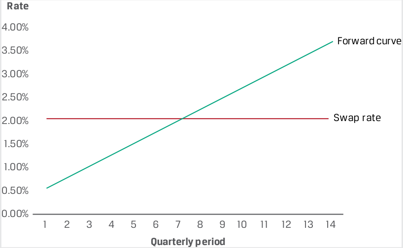
Chú thích hình ảnh: - Trục tung: Lãi suất (Rate) từ $0,00\%$ đến $4,00\%$; Trục hoành: Kỳ hàng quý (Quarterly period) từ 1 đến 14. - Forward curve: Đường cong lãi suất kỳ hạn dốc lên. - Swap rate: Lãi suất hoán đổi cố định ban đầu ($2,05\%$).
As we move forward in time with no change to interest rate expectations, the present value of remaining floating payments rises above the present value of fixed payments at 2.05%, as Esterr has made a net settlement payment in the first two periods.
Khi chúng ta tiến về phía trước theo thời gian mà không có sự thay đổi nào đối với kỳ vọng lãi suất, giá trị hiện tại của các khoản thanh toán thả nổi còn lại sẽ tăng lên cao hơn giá trị hiện tại của các khoản thanh toán cố định ở mức 2,05%, bởi vì Esterr đã thực hiện chi trả khoản thanh toán ròng trong hai kỳ đầu tiên.
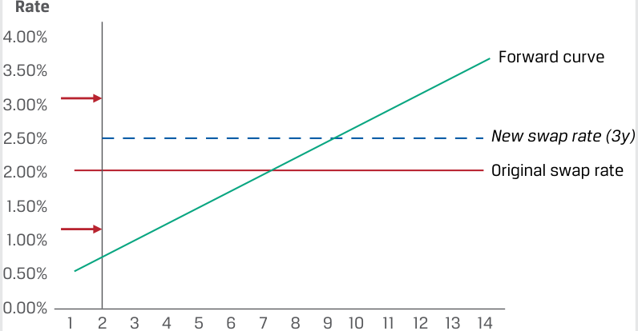
Chú thích hình ảnh: - New swap rate (3y): Lãi suất hoán đổi mới cho 3 năm còn lại (từ kỳ 3 đến kỳ 14), nằm cao hơn Original swap rate (Lãi suất hoán đổi ban đầu $2,05\%$).
Quarterly period
Kỳ hàng quý (Quarterly period)
As the diagram shows, as time progresses, Esterr realizes an MTM gain on the swap, since
Như sơ đồ cho thấy, khi thời gian trôi qua, Esterr thực hiện được một khoản lãi định giá theo thị trường (MTM gain) trên hợp đồng hoán đổi, bởi vì:
Σ PV(Floating payments received) > Σ PV(Fixed payments paid).
Note that this result depends on the relative level of IFRs and shape of the forward curve, which in this case is upward sloping.
Lưu ý rằng kết quả này phụ thuộc vào mức độ tương đối của các mức IFR và hình dạng của đường cong lãi suất kỳ hạn (forward curve), mà trong trường hợp này là dốc lên (upward sloping).
If we instead consider interest rate changes only, from Esterr’s perspective as the fixed-rate payer (and floating-rate receiver), we can show the conditions under which Esterr has a swap MTM gain or loss:
Nếu thay vào đó chúng ta chỉ xem xét những thay đổi về lãi suất, dưới góc độ của Esterr là bên trả lãi cố định (và là bên nhận lãi thả nổi), chúng ta có thể chỉ ra các điều kiện mà theo đó Esterr có khoản lãi hoặc lỗ MTM trên hợp đồng hoán đổi:
-
Esterr realizes an MTM gain on the swap as the fixed-rate payer if
-
Σ PV(Floating payments received) > Σ PV(Fixed payments paid).
-
Esterr realizes an MTM loss on the swap as the fixed-rate payer if
- Esterr thực hiện được một khoản lãi MTM (MTM gain) trên hợp đồng hoán đổi với tư cách là bên trả lãi cố định nếu:
Σ PV(Floating payments received) < Σ PV(Fixed payments paid).
- Esterr thực hiện một khoản lỗ MTM (MTM loss) trên hợp đồng hoán đổi với tư cách là bên trả lãi cố định nếu:
A rise in the expected forward rates after inception will increase the present value of floating payments, while the fixed swap rate will remain the same. We show the effect of an immediate change in interest rates following trade inception in the following diagram:
Sự gia tăng của các mức lãi suất kỳ hạn dự kiến sau khi khởi tạo sẽ làm tăng giá trị hiện tại của các khoản thanh toán thả nổi, trong khi lãi suất hoán đổi cố định vẫn giữ nguyên như cũ. Chúng ta thể hiện tác động của một sự thay đổi tức thời trong lãi suất ngay sau khi khởi tạo giao dịch trong sơ đồ dưới đây:
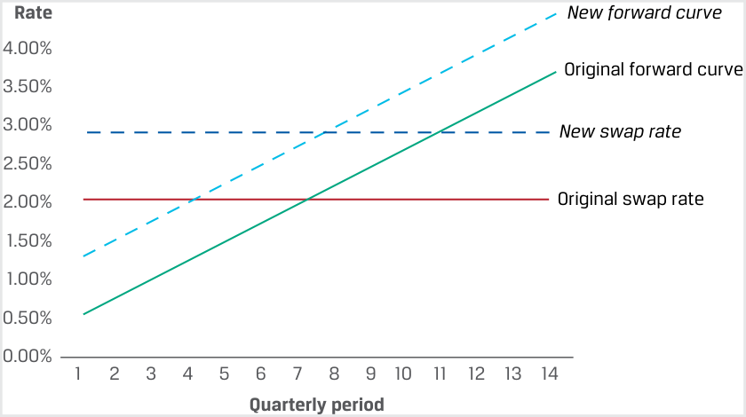
Chú thích hình ảnh: - New forward curve: Đường cong lãi suất kỳ hạn mới (dịch chuyển lên trên Original forward curve – Đường cong lãi suất kỳ hạn ban đầu). - New swap rate: Lãi suất hoán đổi mới (cao hơn Original swap rate – Lãi suất hoán đổi ban đầu).
The new forward curve in this diagram is composed of higher IFRs. If we were to now solve for a fixed swap rate using these higher IFRs by setting floating and fixed cash flows equal to one another, the new swap rate would be above the original swap rate. However, since Esterr has locked in future fixed payments at the lower original swap rate while receiving higher expected future MRRs, the swap has a positive MTM value to Esterr.
Đường cong lãi suất kỳ hạn mới trong sơ đồ này bao gồm các mức IFR cao hơn. Nếu bây giờ chúng ta giải tìm một mức lãi suất hoán đổi cố định bằng cách sử dụng các mức IFR cao hơn này thông qua việc đặt các dòng tiền thả nổi và cố định bằng nhau, thì lãi suất hoán đổi mới sẽ nằm trên mức lãi suất hoán đổi ban đầu. Tuy nhiên, vì Esterr đã khóa chặt (locked in) các khoản thanh toán cố định trong tương lai ở mức lãi suất hoán đổi ban đầu thấp hơn trong khi lại nhận được các mức MRR dự kiến trong tương lai cao hơn, nên hợp đồng hoán đổi có giá trị MTM dương đối với Esterr.
Another interpretation of an interest rate swap is that the fixed-rate payer (floating-rate receiver) is long a floating-rate note (FRN) priced at the MRR and short a fixed-rate bond with a coupon equal to the fixed swap rate. Note that the combination of long and short bond positions causes both the purchase and sale prices of the two bonds at inception and the return of principal at maturity cancel one another out, and only the fixed versus variable coupon payments remain. The following example shows how the change in an interest rate swap’s value is similar to that of a fixed-income security using an earlier investor swap example.
Một cách diễn giải khác về hợp đồng hoán đổi lãi suất là bên trả lãi cố định (bên nhận lãi thả nổi) đang giữ vị thế mua (long) một trái phiếu lãi suất thả nổi (floating-rate note – FRN) được định giá theo MRR và vị thế bán (short) một trái phiếu lãi suất cố định có lãi suất coupon bằng với lãi suất hoán đổi cố định. Lưu ý rằng sự kết hợp của vị thế mua và bán trái phiếu làm cho cả giá mua và giá bán của hai trái phiếu tại thời điểm khởi tạo cũng như việc hoàn trả vốn gốc khi đáo hạn triệt tiêu lẫn nhau, và chỉ còn lại các khoản thanh toán coupon cố định so với biến đổi. Ví dụ sau đây cho thấy sự thay đổi trong giá trị của một hợp đồng hoán đổi lãi suất tương tự như sự thay đổi của một chứng khoán thu nhập cố định như thế nào bằng cách sử dụng một ví dụ về hợp đồng hoán đổi của nhà đầu tư trước đó.
EXAMPLE 4
VÍ DỤ 4 (EXAMPLE 4)
Fyleton Investments
Fyleton Investments
Fyleton Investments entered a five-year, receive-fixed GBP200 million interest rate swap in an example from an earlier lesson to increase the duration of its fixed-income portfolio. Assume in this case that Fyleton receives a fixed swap
Trong một ví dụ ở bài học trước, Fyleton Investments đã tham gia vào một hợp đồng hoán đổi lãi suất kỳ hạn 5 năm, nhận lãi cố định (receive-fixed) trị giá 200 triệu GBP nhằm làm tăng thời lượng (duration) cho danh mục đầu tư thu nhập cố định của mình. Giả sử trong trường hợp này, Fyleton nhận lãi suất hoán đổi cố định
rate of 2.38% on a semiannual basis versus six-month GBP MRR. Further assume that initial six-month GBP MRR sets at 0.71% and, as in the case of Esterr, the MRR forward curve is upward sloping. How will the value of Fyleton’s swap change as time passes and interest rates change?
ở mức 2,38% trên cơ sở nửa năm một lần (semiannual basis) đổi lấy lãi suất MRR đồng GBP kỳ hạn 6 tháng. Giả sử thêm rằng lãi suất MRR đồng GBP kỳ hạn 6 tháng ban đầu được ấn định ở mức 0,71% và, giống như trong trường hợp của Esterr, đường cong lãi suất kỳ hạn MRR có hình dạng dốc lên (upward sloping). Giá trị hợp đồng hoán đổi của Fyleton sẽ thay đổi như thế nào khi thời gian trôi qua và lãi suất thay đổi?
First, consider the passage of time with no rate changes. The first-p ~~e~~ riod swap settlement value (in six months) from Fyleton’s perspective as the fixedrate receiver is
Trước tiên, hãy xem xét sự trôi qua của thời gian mà không có sự thay đổi nào về lãi suất. Giá trị thanh toán hợp đồng hoán đổi kỳ đầu tiên (sau 6 tháng) dưới góc độ của Fyleton là bên nhận lãi cố định (fixed-rate receiver) là:
GBP1,670,000 = (2.38% – 0.71%) × GBP200 million × 0.5.
What is the MTM value from Fyleton’s perspective immediately following the first settlement if implied forward rates remain the same as at trade inception?
Giá trị MTM dưới góc độ của Fyleton ngay sau lần thanh toán đầu tiên là bao nhiêu nếu các mức lãi suất kỳ hạn hàm ý vẫn giữ nguyên như tại thời điểm khởi tạo giao dịch?
As the fixed-rate receiver , Fyleton will realize an MTM loss on the swap, since
Với tư cách là bên nhận lãi cố định, Fyleton sẽ thực hiện một khoản lỗ MTM (MTM loss) trên hợp đồng hoán đổi, bởi vì:
Σ PV(Floating payments paid) > Σ PV(Fixed payments received).
Second, consider a change in forward rates. A decline in expected forward rates immediately following trade inception will reduce the present value of floating payments, while the fixed swap rate will remain the same. Fyleton will realize an MTM gain as the fixed-rate receiver, since
Thứ hai, hãy xem xét sự thay đổi trong lãi suất kỳ hạn. Sự sụt giảm của các mức lãi suất kỳ hạn dự kiến ngay sau khi khởi tạo giao dịch sẽ làm giảm giá trị hiện tại của các khoản thanh toán thả nổi, trong khi lãi suất hoán đổi cố định vẫn giữ nguyên. Fyleton sẽ thực hiện được một khoản lãi MTM (MTM gain) với tư cách là bên nhận lãi cố định, bởi vì:
Σ PV(Fixed payments received) > Σ PV(Floating payments paid).
This MTM gain is shown by the different size of the shaded areas under the original swap rate using the new forward curve in the following diagram.
Khoản lãi MTM này được thể hiện qua kích thước khác nhau của các vùng được tô bóng dưới mức lãi suất hoán đổi ban đầu khi sử dụng đường cong lãi suất kỳ hạn mới trong sơ đồ dưới đây.
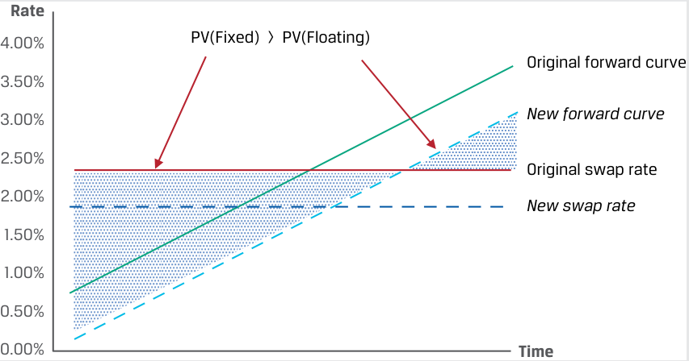
Chú thích hình ảnh: - PV(Fixed) > PV(Floating): Giá trị hiện tại của dòng tiền cố định lớn hơn Giá trị hiện tại của dòng tiền thả nổi. - Original forward curve: Đường cong lãi suất kỳ hạn ban đầu; New forward curve: Đường cong lãi suất kỳ hạn mới (dịch chuyển xuống dưới). - Original swap rate: Lãi suất hoán đổi ban đầu (cao hơn New swap rate – Lãi suất hoán đổi mới).
Note the similarity between the receive-fixed swap exposure profile and that of a long cash fixed-rate bond position. In the first instance, we would expect a fixed-rate par bond to be priced at a discount as time passes if rates rise as per an upward-sloping forward curve, while an FRN priced at the MRR would remain at par. In the second instance, a decline in implied forward rates (or downward shift in the forward curve) would cause a fixed-rate par bond to be priced at a premium , while the FRN price would not change. We will explore how term structure and yield curve changes affect swap values and bond prices in greater detail later in the curriculum.
Hãy lưu ý sự tương đồng giữa hồ sơ phơi nhiễm rủi ro của hợp đồng hoán đổi nhận lãi cố định (receive-fixed swap) và hồ sơ của một vị thế mua trái phiếu tiền mặt lãi suất cố định (long cash fixed-rate bond position). Trong trường hợp thứ nhất, chúng ta kỳ vọng một trái phiếu ngang giá lãi suất cố định sẽ được định giá ở mức chiết khấu (discount) khi thời gian trôi qua nếu lãi suất tăng lên theo đường cong lãi suất kỳ hạn dốc lên, trong khi một trái phiếu FRN được định giá theo MRR sẽ vẫn giữ ở mức ngang giá (par). Trong trường hợp thứ hai, sự sụt giảm của lãi suất kỳ hạn hàm ý (hay sự dịch chuyển xuống dưới của đường cong lãi suất kỳ hạn) sẽ làm cho một trái phiếu ngang giá lãi suất cố định được định giá ở mức thặng dư (premium), trong khi giá trái phiếu FRN sẽ không thay đổi. Chúng ta sẽ khám phá cách thức những thay đổi của cấu trúc kỳ hạn và đường cong lợi suất ảnh hưởng đến giá trị hợp đồng hoán đổi và giá trái phiếu một cách chi tiết hơn ở phần sau của chương trình học.
QUESTION SET
BỘ CÂU HỎI (QUESTION SET)
Swap Prices and Values
Mức giá và Giá trị của Hợp đồng Hoán đổi (Swap Prices and Values)
- Determine the correct answers to fill in the blanks: A rise in the expected forward rates after inception will __ the present value of floating payments, causing a fixed-rate receiver to realize a(n) ____ in MTM value on the swap contract.
- Xác định các câu trả lời đúng để điền vào chỗ trống: Sự gia tăng của các mức lãi suất kỳ hạn dự kiến sau khi khởi tạo sẽ __ giá trị hiện tại của các khoản thanh toán thả nổi, làm cho bên nhận lãi cố định (fixed-rate receiver) thực hiện một sự ____ trong giá trị MTM của hợp đồng hoán đổi.
Lời giải:
Solution:
Sự gia tăng của các mức lãi suất kỳ hạn dự kiến sau khi khởi tạo sẽ làm tăng (increase) giá trị hiện tại của các khoản thanh toán thả nổi, làm cho bên nhận lãi cố định thực hiện một sự sụt giảm (decline) trong giá trị MTM của hợp đồng hoán đổi.
A rise in the expected forward rates after inception will increase the present value of floating payments, causing a fixed-rate receiver to realize a decline in MTM value on the swap contract.
- Xác định phát biểu sau đây là đúng hay sai, và giải thích câu trả lời của bạn: Lãi suất cố định trong một hợp đồng hoán đổi lãi suất được định giá sao cho giá trị hiện tại của các khoản thanh toán thả nổi (dựa trên các mức lãi suất kỳ hạn hàm ý tương ứng cho mỗi kỳ) bằng với giá trị hiện tại của các khoản thanh toán cố định tại thời điểm $t = 0$.
- Identify the following statement as true or false, and justify your response: The fixed rate on an interest rate swap is priced such that the present value of the floating payments (based on respective implied forward rates for each period) is equal to the present value of the fixed payments at t = 0.
- Solution:
Lời giải:
This statement is true. The fixed rate on an interest rate swap may be solved by setting the present value of floating payments equal to the present value of fixed payments. We use zero rates to derive implied forward rates, or breakeven reinvestment rates, between a shorter and a longer zero rate. These IFRs represent the respective floating rates that are expected to apply for each future period at time t = 0.
Phát biểu này là đúng. Lãi suất cố định trong một hợp đồng hoán đổi lãi suất có thể được giải tìm bằng cách đặt giá trị hiện tại của các khoản thanh toán thả nổi bằng với giá trị hiện tại của các khoản thanh toán cố định. Chúng ta sử dụng lãi suất zero (zero rates) để suy ra lãi suất kỳ hạn hàm ý (implied forward rates – IFRs), hay lãi suất tái đầu tư hòa vốn, giữa một mức lãi suất zero ngắn hạn hơn và một mức lãi suất zero dài hạn hơn. Các mức IFR này đại diện cho các mức lãi suất thả nổi tương ứng được kỳ vọng sẽ áp dụng cho từng kỳ tương lai tính tại thời điểm $t = 0$.
-
Identify which of the following statements is associated with which position in an interest rate swap contract.
-
Establishes a set of certain net A. Fixed-rate payer (Floating-rate receiver) future cash flows on a swap contract at inception
-
Realizes an MTM gain on a swap B. Fixed-rate receiver (Floating-rate contract if the expected future payer) floating-rate payments increase
-
An investor may increase portfolio C. Neither a fixed-rate payer nor a duration by entering this position in a fixed-rate receiver swap contract
- Xác định phát biểu nào sau đây gắn liền với vị thế nào trong một hợp đồng hoán đổi lãi suất.
Solution:
| Phát biểu | Vị thế trong hợp đồng hoán đổi lãi suất |
|---|---|
| 1. Thiết lập một tập hợp các dòng tiền tương lai ròng chắc chắn (certain net future cash flows) trên một hợp đồng hoán đổi tại thời điểm khởi tạo | A. Bên trả lãi cố định (Bên nhận lãi thả nổi) (Fixed-rate payer / Floating-rate receiver) |
| 2. Thực hiện được một khoản lãi MTM trên hợp đồng hoán đổi nếu các khoản thanh toán lãi suất thả nổi dự kiến trong tương lai tăng lên | B. Bên nhận lãi cố định (Bên trả lãi thả nổi) (Fixed-rate receiver / Floating-rate payer) |
| 3. Một nhà đầu tư có thể làm tăng thời lượng (duration) của danh mục đầu tư bằng cách tham gia vị thế này trong một hợp đồng hoán đổi | C. Không phải bên trả lãi cố định cũng không phải bên nhận lãi cố định (Neither a fixed-rate payer nor a fixed-rate receiver) |
1. C is correct. A swap contract establishes a set of certain fixed future cash flows that are exchanged for a set of expected ( uncertain ) floating future cash flows. Therefore, neither a fixed-rate payer nor a fixed-rate receiver knows the net future cash flows of a swap at inception.
Lời giải:
1. C là đáp án đúng. Một hợp đồng hoán đổi thiết lập một tập hợp các dòng tiền tương lai cố định chắc chắn (certain) được đem trao đổi lấy một tập hợp các dòng tiền tương lai thả nổi dự kiến (không chắc chắn – uncertain). Do đó, không bên nào (cả bên trả lãi cố định lẫn bên nhận lãi cố định) biết trước được các dòng tiền tương lai ròng (net future cash flows) của hợp đồng hoán đổi tại thời điểm khởi tạo.
2. A is correct. A fixed-rate payer realizes an MTM gain on a swap contract if the expected future floating-rate payments increase.
2. A là đáp án đúng. Bên trả lãi cố định thực hiện được một khoản lãi MTM trên hợp đồng hoán đổi nếu các khoản thanh toán lãi suất thả nổi dự kiến trong tương lai tăng lên.
3. B is correct. A fixed-rate receiver may increase portfolio duration by entering this position on a swap, because receiving fixed is similar to a long bond position.
3. B là đáp án đúng. Bên nhận lãi cố định có thể làm tăng thời lượng (duration) của danh mục đầu tư bằng cách tham gia vị thế này trong hợp đồng hoán đổi, bởi vì việc nhận lãi cố định tương tự như một vị thế mua trái phiếu (long bond position).
-
Determine the correct answers to fill in the blanks: The value of a swap on any settlement date equals the __ settlement value plus the present value of all remaining ____ swap settlements. Solution: The value of a swap on any settlement date equals the current settlement value plus the present value of all remaining future swap settlements.
-
Describe how an investor may use an interest rate swap to reduce the duration of a fixed-income portfolio, and justify your response. Solution: A pay-fixed swap is similar to a short bond position that reduces duration, because the fixed-rate payer (floating-rate receiver) is effectively long a floating-rate note priced at the MRR and short a fixed-rate bond with a coupon equal to the fixed swap rate.
- Xác định các câu trả lời đúng để điền vào chỗ trống: Giá trị của một hợp đồng hoán đổi vào bất kỳ ngày thanh toán nào bằng giá trị thanh toán __ cộng với giá trị hiện tại của tất cả các khoản thanh toán hoán đổi ____ còn lại.
Lời giải:
Giá trị của một hợp đồng hoán đổi vào bất kỳ ngày thanh toán nào bằng giá trị thanh toán hiện tại (current) cộng với giá trị hiện tại của tất cả các khoản thanh toán hoán đổi tương lai (future) còn lại.
- Mô tả cách thức một nhà đầu tư có thể sử dụng hợp đồng hoán đổi lãi suất để làm giảm thời lượng (duration) của một danh mục đầu tư thu nhập cố định, và giải thích lý do cho câu trả lời của bạn.
Lời giải:
Một hợp đồng hoán đổi trả lãi cố định (pay-fixed swap) tương tự như một vị thế bán trái phiếu (short bond position) giúp làm giảm thời lượng (duration), bởi vì bên trả lãi cố định (bên nhận lãi thả nổi) về thực chất đang giữ vị thế mua (long) một trái phiếu lãi suất thả nổi được định giá theo MRR và giữ vị thế bán (short) một trái phiếu lãi suất cố định có lãi suất coupon bằng với lãi suất hoán đổi cố định.
~~PRACTICE PROBLEMS~~
BÀI TẬP THỰC HÀNH (PRACTICE PROBLEMS)
The following information relates to questions 1-6
Ace Limited is a financial intermediary that is active in forward and swap markets with its issuer and investor clients. You have been asked to consult on a number of client situations to determine the best course of action.
Thông tin sau đây liên quan đến các câu hỏi từ 1 đến 6
1. Identify which of the following statements is associated with which Ace counterparty swap position.
Ace Limited là một định chế tài chính trung gian hoạt động tích cực trên thị trường kỳ hạn và hoán đổi với các khách hàng là tổ chức phát hành và nhà đầu tư. Bạn được yêu cầu tư vấn về một số tình huống của khách hàng để xác định hướng hành động tốt nhất.
-
Ace’s counterparty with this swap position will realize an MTM gain if implied forward rates rise.
-
Ace’s counterparty with this swap position will make a net payment if the initial market reference rate sets above the fixed swap rate.
-
Ace’s counterparty with this position will face an initial swap contract value (ignoring transaction and counterparty credit costs) of zero.
1. Xác định phát biểu nào sau đây gắn liền với vị thế hoán đổi nào của đối tác giao dịch với Ace.
A. A receive-fixed interest rate swap
B. A pay-fixed interest rate swap
| Phát biểu | Vị thế hoán đổi của đối tác |
|---|---|
| 1. Đối tác của Ace giữ vị thế hoán đổi này sẽ thực hiện được một khoản lãi MTM nếu các mức lãi suất kỳ hạn hàm ý tăng lên. | A. Hợp đồng hoán đổi lãi suất nhận cố định (A receive-fixed interest rate swap) |
| 2. Đối tác của Ace giữ vị thế hoán đổi này sẽ phải thực hiện một khoản thanh toán ròng nếu lãi suất tham chiếu thị trường (MRR) ban đầu được ấn định cao hơn lãi suất hoán đổi cố định. | B. Hợp đồng hoán đổi lãi suất trả cố định (A pay-fixed interest rate swap) |
| 3. Đối tác của Ace giữ vị thế này sẽ có giá trị hợp đồng hoán đổi ban đầu (bỏ qua chi phí giao dịch và chi phí tín dụng đối tác) bằng không. | C. Cả hợp đồng hoán đổi lãi suất nhận cố định và trả cố định (Both a receive-fixed and a pay-fixed interest rate swap) |
C. Both a receive-fixed and a pay-fixed interest rate swap
2. Khách hàng của Ace là một công ty quản lý tài sản có một phần đáng kể danh mục đầu tư trái phiếu lãi suất cố định sắp đáo hạn. Khách hàng của Ace dự định tái đầu tư số tiền thu được vào các trái phiếu có kỳ hạn 5 năm. Phương án nào sau đây mô tả hướng hành động tốt nhất trên thị trường công cụ phái sinh để khách hàng của Ace giải quyết rủi ro tái đầu tư trái phiếu (bond reinvestment risk) của mình?
2. Ace’s client is an asset manager with a significant portion of its fixed-rate bond investment portfolio maturing soon. Ace intends to reinvest the proceeds in five-year bond maturities. Which of the following describes the best course of action in the derivatives market for Ace’s client to address its bond reinvestment risk?
-
A. Khách hàng của Ace nên cân nhắc việc nhận lãi cố định trong một hợp đồng hoán đổi kỳ hạn 5 năm bắt đầu trong tương lai (forward-starting swap) được thanh toán bằng tiền mặt, bắt đầu và thanh toán sau 3 tháng nữa nhằm giải quyết tốt nhất rủi ro tái đầu tư trái phiếu của mình.
-
B. Khách hàng của Ace nên cân nhắc việc trả lãi cố định trong một hợp đồng hoán đổi kỳ hạn 5 năm bắt đầu trong tương lai được thanh toán bằng tiền mặt, bắt đầu sau 3 tháng nữa nhằm giải quyết tốt nhất rủi ro tái đầu tư trái phiếu của mình.
-
C. Khách hàng của Ace nên cân nhắc việc tham gia vào một chuỗi các hợp đồng kỳ hạn lãi suất (FRAs) từ hôm nay cho đến 5 năm sau, theo đó họ trả lãi suất cố định và nhận lãi suất thả nổi mỗi kỳ kết thúc sau 5 năm để giải quyết rủi ro tái đầu tư trái phiếu của mình.
-
A. Ace’s client should consider receiving fixed on a cash-settled five-year forward-starting swap that starts and settles in three months in order to best address its bond reinvestment risk.
-
B. Ace’s client should consider paying fixed on a cash-settled five-year forward-starting swap starting in three months in order to best address its bond reinvestment risk.
-
C. Ace’s client should consider entering a series of forward rate agreements (FRAs) from today until five years from now under which it pays a fixed rate and receives a floating rate each period ending in five years to address its bond reinvestment risk.
3. Ace enters a 10-year GBP interest rate swap with a client in which Ace receives an initial six-month GBP MRR of 1.75% and pays a fixed GBP swap rate of 3.10% for the first semiannual period. Which of the following statements best describes the value of the swap from Ace’s perspective three months after the inception of the trade?
3. Ace tham gia vào một hợp đồng hoán đổi lãi suất đồng GBP kỳ hạn 10 năm với một khách hàng, trong đó Ace nhận lãi suất MRR đồng GBP kỳ hạn 6 tháng ban đầu là 1,75% và trả lãi suất hoán đổi cố định đồng GBP là 3,10% cho kỳ nửa năm đầu tiên. Phát biểu nào sau đây mô tả đúng nhất giá trị của hợp đồng hoán đổi dưới góc độ của Ace vào thời điểm 3 tháng sau khi khởi tạo giao dịch?
- A. Ace has an MTM loss on the swap, because it owes a net settlement payment to its counterparty equal to 1.35% multiplied by the notional and period.
- A. Ace có một khoản lỗ MTM trên hợp đồng hoán đổi, bởi vì công ty nợ đối tác một khoản thanh toán ròng bằng 1,35% nhân với vốn danh nghĩa và kỳ hạn.
-
B. Ace has an MTM gain on the swap, because once it makes the first known net payment to its counterparty, the remainder of the future net fixed versus floating cash flows must have a positive present value from Ace’s perspective.
-
C. While the present value of fixed and future cash flows was set to zero by solving for the swap rate at inception, we do not have enough information to determine whether the swap currently has a positive or negative value from Ace’s perspective following inception.
-
B. Ace có một khoản lãi MTM trên hợp đồng hoán đổi, bởi vì một khi công ty thực hiện khoản thanh toán ròng đầu tiên đã biết cho đối tác của mình, phần còn lại của các dòng tiền cố định so với thả nổi ròng trong tương lai phải có giá trị hiện tại dương dưới góc độ của Ace.
-
C. Mặc dù giá trị hiện tại của các dòng tiền cố định và tương lai đã được thiết lập bằng không thông qua việc giải tìm lãi suất hoán đổi tại thời điểm khởi tạo, chúng ta không có đủ thông tin để xác định liệu hợp đồng hoán đổi hiện đang có giá trị dương hay âm dưới góc độ của Ace sau khi khởi tạo.
4. Ace enters a 10-year GBP interest rate swap with a client in which Ace receives an initial six-month GBP MRR of 1.75% and pays a fixed GBP swap rate of 3.10% for the first semiannual period. Six months later, Ace and its counterparty settle the first swap payment, and no change has occurred in terms of future interest rate expectations. Which of the following statements best describes the value of the swap from Ace’s perspective?
4. Ace tham gia vào một hợp đồng hoán đổi lãi suất đồng GBP kỳ hạn 10 năm với một khách hàng, trong đó Ace nhận lãi suất MRR đồng GBP kỳ hạn 6 tháng ban đầu là 1,75% và trả lãi suất hoán đổi cố định đồng GBP là 3,10% cho kỳ nửa năm đầu tiên. Sáu tháng sau, Ace và đối tác của mình thanh toán khoản tiền hoán đổi đầu tiên, và không có sự thay đổi nào xảy ra đối với kỳ vọng lãi suất trong tương lai. Phát biểu nào sau đây mô tả đúng nhất giá trị của hợp đồng hoán đổi dưới góc độ của Ace?
-
A. Ace has an MTM gain on the swap, because once it makes the first known net payment to its counterparty, the remainder of the future net fixed versus floating cash flows must have a positive present value from Ace’s perspective.
-
B. Ace has an MTM loss on the swap, because once it receives the first known payment from its counterparty, the remainder of the future net fixed versus floating cash flows must have a negative present value from Ace’s perspective.
-
C. While the present value of fixed and future cash flows was set to zero by solving for the swap rate at inception, we do not have enough information to determine whether the swap currently has a positive or negative value from Ace’s perspective following inception.
-
A. Ace có một khoản lãi MTM trên hợp đồng hoán đổi, bởi vì một khi công ty thực hiện khoản thanh toán ròng đầu tiên đã biết cho đối tác của mình, phần còn lại của các dòng tiền cố định so với thả nổi ròng trong tương lai phải có giá trị hiện tại dương dưới góc độ của Ace.
-
B. Ace có một khoản lỗ MTM trên hợp đồng hoán đổi, bởi vì một khi công ty nhận được khoản thanh toán đầu tiên đã biết từ đối tác của mình, phần còn lại của các dòng tiền cố định so với thả nổi ròng trong tương lai phải có giá trị hiện tại âm dưới góc độ của Ace.
-
C. Mặc dù giá trị hiện tại của các dòng tiền cố định và tương lai đã được thiết lập bằng không thông qua việc giải tìm lãi suất hoán đổi tại thời điểm khởi tạo, chúng ta không có đủ thông tin để xác định liệu hợp đồng hoán đổi hiện đang có giá trị dương hay âm dưới góc độ của Ace sau khi khởi tạo.
5. At time t = 0, Ace observes the following zero rates over three periods:
5. Tại thời điểm $t = 0$, Ace quan sát thấy các mức lãi suất zero sau đây qua ba kỳ:
| Periods | Zero Rates |
|---|---|
| 1 | 2.2727% |
| 2 | 3.0323% |
| 3 | 3.6355% |
| Kỳ (Periods) | Lãi suất Zero (Zero Rates) |
|---|---|
| 1 | 2,2727% |
| 2 | 3,0323% |
| 3 | 3,6355% |
Which of the following best describes how Ace arrives at a three-period par swap rate ( s 3)?
Phương án nào sau đây mô tả đúng nhất cách thức Ace tính ra lãi suất hoán đổi ngang giá ba kỳ ($s_3$)?
-
A. Since the par swap rate represents the fixed rate at which the present value of fixed and future cash flows equal one another, we discount each zero rate back to the present using zero rates and solve for s 3 to get 2.961%.
-
B. Since the par swap rate represents the fixed rate at which the present value of fixed and future cash flows equal one another, we first solve for the implied forward rate per period using zero rates, then discount each implied forward rate back to the present using zero rates, and solve for s 3 to get 3.605%.
-
A. Vì lãi suất hoán đổi ngang giá đại diện cho mức lãi suất cố định mà tại đó giá trị hiện tại của các dòng tiền cố định và tương lai bằng nhau, chúng ta chiết khấu từng mức lãi suất zero về hiện tại bằng cách sử dụng các mức lãi suất zero và giải tìm $s_3$ để có được 2,961%.
-
B. Vì lãi suất hoán đổi ngang giá đại diện cho mức lãi suất cố định mà tại đó giá trị hiện tại của các dòng tiền cố định và tương lai bằng nhau, trước tiên chúng ta giải tìm lãi suất kỳ hạn hàm ý cho mỗi kỳ bằng cách sử dụng các mức lãi suất zero, sau đó chiết khấu từng mức lãi suất kỳ hạn hàm ý về hiện tại bằng cách sử dụng các mức lãi suất zero, và giải tìm $s_3$ để có được 3,605%.
- C. Since the par swap rate represents the fixed rate at which the present value of fixed and future cash flows equal one another, we first solve for the implied forward rate per period using zero rates, then discount each zero rate back to the present using implied forward rates, and solve for s 3 to get 3.009%.
- C. Vì lãi suất hoán đổi ngang giá đại diện cho mức lãi suất cố định mà tại đó giá trị hiện tại của các dòng tiền cố định và tương lai bằng nhau, trước tiên chúng ta giải tìm lãi suất kỳ hạn hàm ý cho mỗi kỳ bằng cách sử dụng các mức lãi suất zero, sau đó chiết khấu từng mức lãi suất zero về hiện tại bằng cách sử dụng các mức lãi suất kỳ hạn hàm ý, và giải tìm $s_3$ để có được 3,009%.
6. Ace’s issuer client has swapped its outstanding fixed-rate debt to floating to match asset portfolio cash flows that generate an MRR-based return. Which of the following statements best describes how Ace’s MTM credit exposure to the issuer changes if interest rates rise immediately following trade inception?
6. Khách hàng tổ chức phát hành của Ace đã hoán đổi khoản nợ lãi suất cố định đang lưu hành của mình sang lãi suất thả nổi để khớp với các dòng tiền từ danh mục tài sản vốn tạo ra tỷ suất sinh lợi dựa trên MRR. Phát biểu nào sau đây mô tả đúng nhất mức phơi nhiễm rủi ro tín dụng MTM (MTM credit exposure) của Ace đối với tổ chức phát hành thay đổi như thế nào nếu lãi suất tăng lên ngay sau khi khởi tạo giao dịch?
-
A. Since the client receives fixed and pays floating swap, it faces an MTM loss on the transaction as rates rise, increasing Ace’s MTM exposure to the client.
-
B. Since the client receives fixed and pays floating swap, it faces an MTM gain on the transaction as rates rise, decreasing Ace’s MTM exposure to the client.
-
C. Since the swap’s value is equal to the current settlement plus future expected settlement amounts, we do not have enough information to determine whether Ace’s MTM exposure to the client increases or decreases.
-
A. Vì khách hàng nhận lãi cố định và trả lãi thả nổi trên hợp đồng hoán đổi, khách hàng phải đối mặt với một khoản lỗ MTM trên giao dịch khi lãi suất tăng lên, làm tăng mức phơi nhiễm rủi ro MTM của Ace đối với khách hàng.
-
B. Vì khách hàng nhận lãi cố định và trả lãi thả nổi trên hợp đồng hoán đổi, khách hàng có được một khoản lãi MTM trên giao dịch khi lãi suất tăng lên, làm giảm mức phơi nhiễm rủi ro MTM của Ace đối với khách hàng.
-
C. Vì giá trị của hợp đồng hoán đổi bằng khoản thanh toán hiện tại cộng với các khoản thanh toán dự kiến trong tương lai, chúng ta không có đủ thông tin để xác định liệu mức phơi nhiễm rủi ro MTM của Ace đối với khách hàng tăng hay giảm.
~~SOLUTIONS~~
LỜI GIẢI (SOLUTIONS)
-
- B is correct. A pay-fixed swap counterparty will realize an MTM gain if implied forward rates rise.
-
A is correct. A receive-fixed swap counterparty will make a net payment if the initial market reference rate sets above the fixed swap rate.
-
C is correct. Both a receive-fixed and a pay-fixed swap counterparty will face an initial swap contract value (ignoring transaction and counterparty credit costs) of zero.
-
A is correct. Ace’s client should consider receiving fixed on a five-year swap. A receive-fixed swap has a risk and return profile similar to that of a long fixed-rate bond position. Ace’s client would therefore expect to have a similar MTM gain or loss on the swap position as if it had purchased a five-year bond at inception.
-
C is correct. At time t = 0, the present value of fixed and future cash flows was set to zero by solving for the swap rate at inception. Although the current settlement value is known, we cannot determine whether the swap has a positive or negative value from Ace’s perspective three months later without further information— specifically, the current level of future forward rates.
-
A is correct. Ace makes the first net payment because the fixed-rate payment is greater than the floating rate received. Given no change in forward interest rates, this implies that the remaining net cash flows must have positive present value to Ace. B is incorrect as this response states the opposite compared to the prior response. C is incorrect because we have information about forward rate expectations.
-
B is correct. Since the expected floating cash flows on the swap are the implied forward rates, we first use zero rates to solve for IFRs using Equation 1:
-
- B là đáp án đúng. Một đối tác tham gia hợp đồng hoán đổi trả lãi cố định (pay-fixed swap) sẽ thực hiện được một khoản lãi MTM nếu các mức lãi suất kỳ hạn hàm ý tăng lên.
-
A là đáp án đúng. Một đối tác tham gia hợp đồng hoán đổi nhận lãi cố định (receive-fixed swap) sẽ phải thực hiện một khoản thanh toán ròng nếu lãi suất tham chiếu thị trường (MRR) ban đầu được ấn định cao hơn lãi suất hoán đổi cố định.
-
C là đáp án đúng. Cả đối tác tham gia hợp đồng hoán đổi nhận lãi cố định và trả lãi cố định đều sẽ đứng trước giá trị hợp đồng hoán đổi ban đầu (bỏ qua chi phí giao dịch và chi phí tín dụng đối tác) bằng không.
-
A là đáp án đúng. Khách hàng của Ace nên cân nhắc việc nhận lãi cố định trên một hợp đồng hoán đổi kỳ hạn 5 năm. Một hợp đồng hoán đổi nhận lãi cố định có hồ sơ rủi ro và tỷ suất sinh lợi tương tự như một vị thế mua trái phiếu lãi suất cố định (long fixed-rate bond position). Do đó, khách hàng của Ace sẽ kỳ vọng có được một khoản lãi hoặc lỗ MTM tương tự trên vị thế hoán đổi giống như thể họ đã mua một trái phiếu kỳ hạn 5 năm tại thời điểm khởi tạo.
-
C là đáp án đúng. Tại thời điểm $t = 0$, giá trị hiện tại của các dòng tiền cố định và tương lai đã được thiết lập bằng không thông qua việc giải tìm lãi suất hoán đổi tại thời điểm khởi tạo. Mặc dù giá trị thanh toán hiện tại đã được biết, chúng ta không thể xác định liệu hợp đồng hoán đổi có giá trị dương hay âm dưới góc độ của Ace vào thời điểm 3 tháng sau nếu không có thêm thông tin—cụ thể là mức lãi suất kỳ hạn tương lai hiện hành.
-
A là đáp án đúng. Ace thực hiện chi trả khoản thanh toán ròng đầu tiên bởi vì khoản thanh toán lãi suất cố định lớn hơn mức lãi suất thả nổi nhận được. Với giả định không có sự thay đổi nào trong lãi suất kỳ hạn tương lai, điều này hàm ý rằng các dòng tiền ròng còn lại phải có giá trị hiện tại dương đối với Ace. B không đúng vì câu trả lời này phát biểu ngược lại so với câu trả lời trước. C không đúng vì chúng ta đã có thông tin về kỳ vọng lãi suất kỳ hạn.
-
B là đáp án đúng. Vì các dòng tiền thả nổi dự kiến trên hợp đồng hoán đổi là các mức lãi suất kỳ hạn hàm ý (IFRs), trước tiên chúng ta sử dụng lãi suất zero để giải tìm các mức IFR bằng Phương trình 1:
(1 + zA )A × (1 + IFR A , B – A )B–A = (1 + zB )B .
We may solve for these rates as IFR0,1 = 2.2727%, IFR1,1 = 3.7975%, and IFR2,1 = 4.8525%. We then substitute the respective IFRs discounted by zero rates into the following equation to solve for s 3:
Chúng ta có thể giải tìm các mức lãi suất này lần lượt là $\text{IFR}_{0,1} = 2,2727\%$, $\text{IFR}_{1,1} = 3,7975\%$, và $\text{IFR}_{2,1} = 4,8525\%$. Sau đó, chúng ta thay thế các mức IFR tương ứng được chiết khấu bằng lãi suất zero vào phương trình sau đây để giải tìm $s_3$:
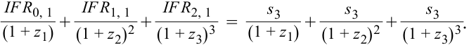
Solving for the left-hand side of the equation, we get
Giải vế trái của phương trình, chúng ta có được:
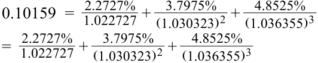
Solving for the right-hand side, we get
Giải vế phải, chúng ta có được:
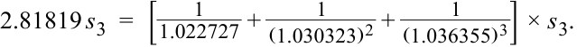
s 3 = 3.605% = 0.10159 ÷ 2.81819.
A is incorrect, because it discounts zero rates, not IFRs, back to the present using zero rates, while C incorrectly discounts zero rates by the respective IFRs.
A không đúng vì phương án này chiết khấu lãi suất zero chứ không phải các mức IFR về hiện tại bằng lãi suất zero, trong khi C chiết khấu sai các mức lãi suất zero bằng các mức IFR tương ứng.
- A is correct. Since the client receives fixed and pays floating swap, in a rising-rate environment, Σ PV(Floating payments) > Σ PV(Fixed payments), and it will
- A là đáp án đúng. Vì khách hàng nhận lãi cố định và trả lãi thả nổi trên hợp đồng hoán đổi, trong môi trường lãi suất tăng lên, $\sum \text{PV}(\text{Các khoản thanh toán thả nổi}) > \sum \text{PV}(\text{Các khoản thanh toán cố định})$, và do đó khách hàng sẽ
therefore owe more in future floating-rate settlements than it will receive in fixed-rate settlements, resulting in an MTM loss for the client and an increase in Ace’s MTM exposure.
nợ nhiều hơn trong các khoản thanh toán lãi suất thả nổi tương lai so với số tiền họ sẽ nhận được trong các khoản thanh toán lãi suất cố định, dẫn đến một khoản lỗ MTM cho khách hàng và làm tăng mức phơi nhiễm rủi ro tín dụng MTM của Ace (vì hợp đồng có giá trị dương đối với Ace).